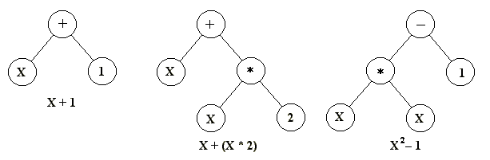
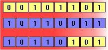
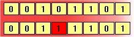
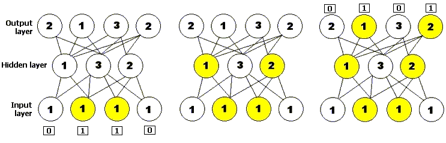
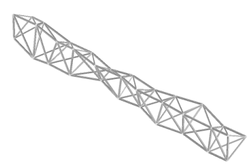
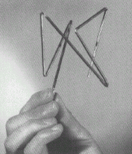

Otros enlaces:
|
- Introducción
- ¿Qué es un algoritmo genético?
- Breve historia de los algoritmos genéticos
- ¿Cuáles son las fortalezas de los algoritmos genéticos?
- ¿Cuáles son las limitaciones de los algoritmos genéticos?
- Algunos ejemplos específicos de algoritmos genéticos
- Argumentos creacionistas
- Conclusión
- Referencias y recursos
Introducción |
Los creacionistas ocasionalmente acusan de que la evolución es una teoría científica inútil porque no produce beneficios prácticos y no tiene relevancia para la vida cotidiana. Sin embargo, la evidencia de la biología por sí sola muestra que esta afirmación es falsa. Existen numerosos fenómenos naturales para los cuales la evolución nos proporciona un fundamento teórico sólido. Para nombrar solo uno, el desarrollo observado de resistencia - a los insecticidas en plagas de cultivos, a los antibióticos en bacterias, a la quimioterapia en células cancerosas y a los fármacos anti-retrovirales en virus como el VIH - es una consecuencia directa de las leyes de la mutación y la selección, y comprender estos principios nos ha ayudado a diseñar estrategias para hacer frente a estos organismos nocivos. El postulado evolutivo de la descendencia común ha ayudado al desarrollo de nuevos medicamentos y técnicas médicas al dar a los investigadores una buena idea de qué organismos deberían experimentar para obtener resultados que sean más probablemente relevantes para los humanos. Finalmente, el principio de la cría selectiva ha sido utilizado con gran éxito por los humanos para crear organismos personalizados, a diferencia de cualquier cosa encontrada en la naturaleza, para su propio beneficio. El ejemplo canónico, por supuesto, son las muchas variedades de perros domésticos (razas tan diversas como los bulldogs, los chihuahuas y los dachshunds han sido producidas a partir de lobos en solo unos pocos miles de años), pero ejemplos menos conocidos incluyen el maíz cultivado (muy diferente de sus parientes silvestres, ninguno de los cuales tiene las famosas "mazorcas" del maíz cultivado por humanos), los peces dorados (como los perros, hemos criado variedades que se ven dramáticamente diferentes del tipo silvestre) y las vacas lecheras (con ubres inmensas mucho más grandes de las que serían necesarias solo para nutrir a la descendencia).
Los críticos podrían acusar a los creacionistas de poder explicar estas cosas sin recurrir a la evolución. Por ejemplo, los creacionistas suelen explicar el desarrollo de resistencia a agentes antibióticos en bacterias, o los cambios producidos en animales domésticos por la selección artificial, presumiendo que Dios decidió crear organismos en grupos fijos, llamados "clases" o baramin. Aunque la microevolución natural o la selección artificial guiada por el humano puedan producir diferentes variedades dentro de la "clase" originalmente creada de "perro", o "vaca", o "bacteria" (!), ninguna cantidad de tiempo o cambio genético puede transformar una "clase" en otra. Sin embargo, exactamente cómo determinan los creacionistas qué es una "clase", o qué mecanismo impide que los seres vivos evolucionen más allá de sus límites, es invariablemente nunca explicado.
Pero en las últimas décadas, el avance continuo de la tecnología moderna ha traído algo nuevo. La evolución está produciendo beneficios prácticos en un campo muy diferente, y esta vez, los creacionistas no pueden afirmar que su explicación se ajusta a los hechos tan bien como antes. Este campo es la informática, y los beneficios provienen de una estrategia de programación llamada algoritmos genéticos. Este ensayo explicará qué son los algoritmos genéticos y mostrará cómo son relevantes para el debate sobre la evolución/creacionismo.
¿Qué es un algoritmo genético? |
- Métodos de representación
- Métodos de selección
- Métodos de cambio
- Otras técnicas de resolución de problemas
En términos concisos, un algoritmo genético (o GA por sus siglas) es una técnica de programación que imita la evolución biológica como estrategia de resolución de problemas. Dado un problema específico por resolver, la entrada del GA es un conjunto de soluciones potenciales para ese problema, codificadas de cierta manera, y una métrica llamada función de aptitud que permite evaluar cuantitativamente a cada candidato. Estos candidatos pueden ser soluciones ya conocidas que funcionan, con el objetivo del GA de mejorarlas, pero con más frecuencia son generados al azar.
El GA evalúa entonces a cada candidato según la función de aptitud. En un grupo de candidatos generados aleatoriamente, por supuesto, la mayoría no funcionará en absoluto y estos serán eliminados. Sin embargo, puramente por azar, algunos pueden mostrar promesa: pueden exhibir actividad, incluso si es solo débil e imperfecta, orientada a resolver el problema.
Estos candidatos prometedores se conservan y se les permite reproducir. Se crean múltiples copias de ellos, pero las copias no son perfectas; se introducen cambios aleatorios durante el proceso de copia. Estos descendientes digitales pasan entonces a la siguiente generación, formando un nuevo conjunto de soluciones candidatas, y se someten a una segunda ronda de evaluación de aptitud. Aquellas soluciones candidatas que se vieron empeoradas, o que no mejoraron, debido a los cambios en su código son nuevamente eliminadas; pero, de nuevo, puramente por azar, las variaciones aleatorias introducidas en la población pueden haber mejorado a algunos individuos, convirtiéndolos en soluciones mejores, más completas o más eficientes al problema en cuestión. De nuevo, estos individuos ganadores son seleccionados y copiados hacia la siguiente generación con cambios aleatorios, y el proceso se repite. La expectativa es que la aptitud promedio de la población aumente en cada ronda, y por lo tanto, al repetir este proceso durante cientos o miles de rondas, se pueden descubrir soluciones muy buenas al problema.
Aunque parezca asombroso y contraintuitivo para algunos, los algoritmos genéticos se han demostrado ser una estrategia de resolución de problemas enormemente poderosa y exitosa, demostrando dramáticamente el poder de los principios evolutivos. Los algoritmos genéticos se han utilizado en una amplia variedad de campos para evolucionar soluciones a problemas tan difíciles o más difíciles que los enfrentados por los diseñadores humanos. Además, las soluciones que encuentran son a menudo más eficientes, más elegantes o más complejas que cualquier cosa comparable que produciría un ingeniero humano. En algunos casos, los algoritmos genéticos han encontrado soluciones que desconciertan a los programadores que escribieron los algoritmos en primer lugar.
Métodos de representación
Antes de que un algoritmo genético pueda aplicarse a cualquier problema, se necesita un método para codificar las soluciones potenciales a ese problema en una forma que una computadora pueda procesar. Un enfoque común es codificar las soluciones como cadenas binarias: secuencias de 1 y 0, donde el dígito en cada posición representa el valor de algún aspecto de la solución. Otro enfoque similar es codificar las soluciones como arrays de enteros o números decimales, con cada posición representando nuevamente algún aspecto particular de la solución. Este enfoque permite una mayor precisión y complejidad que el método comparativamente restringido de usar solo números binarios y a menudo "es intuitivamente más cercano al espacio del problema" (Fleming y Purshouse 2002, p. 1228).
Esta técnica se utilizó, por ejemplo, en el trabajo de Steffen Schulze-Kremer, quien escribió un algoritmo genético para predecir la estructura tridimensional de una proteína basándose en la secuencia de aminoácidos que la componen (Mitchell 1996, p. 62). El AG de Schulze-Kremer utilizó números de valor real para representar los llamados "ángulos de torsión" entre los enlaces peptídicos que unen los aminoácidos. (Una proteína está compuesta por una secuencia de bloques básicos llamados aminoácidos, que se unen entre sí como los eslabones de una cadena. Una vez que todos los aminoácidos están unidos, la proteína se pliega en una forma tridimensional compleja basada en qué aminoácidos se atraen entre sí y cuáles se repelen. La forma de una proteína determina su función.) Los algoritmos genéticos para entrenar redes neuronales a menudo utilizan también este método de codificación.
Un tercer enfoque consiste en representar los individuos en una GA como cadenas de letras, donde cada letra representa nuevamente un aspecto específico de la solución. Un ejemplo de esta técnica es el enfoque de "codificación gramatical" de Hiroaki Kitano, donde una GA se sometió a la tarea de evolucionar un conjunto simple de reglas llamado gramática libre de contexto que, a su vez, se utilizó para generar redes neuronales para una variedad de problemas (Mitchell 1996, p. 74).
La virtud de los tres métodos es que permiten definir fácilmente operadores que causan cambios aleatorios en los candidatos seleccionados: cambiar un 0 por un 1 o viceversa, sumar o restar al valor de un número una cantidad elegida aleatoriamente, o cambiar una letra por otra. (Véase la sección sobre Métodos de cambio para más detalles sobre los operadores genéticos.) Otra estrategia, desarrollada principalmente por John Koza de la Universidad de Stanford y llamada programación genética, representa programas como estructuras de datos ramificadas llamadas árboles (Koza et al. 2003, p. 35). En este enfoque, los cambios aleatorios pueden producirse cambiando el operador o alterando el valor en un nodo dado del árbol, o reemplazando un subárbol por otro.

Figura 1: Tres árboles de programas simples del tipo normalmente utilizados en programación genética. La expresión matemática que cada uno representa se proporciona debajo.
Es importante notar que los algoritmos evolutivos no necesitan representar las soluciones candidatas como cadenas de datos de longitud fija. Algunos lo hacen de esta manera, pero otros no; por ejemplo, la codificación gramatical de Kitano, discutida anteriormente, puede escalarse eficientemente para crear redes neuronales grandes y complejas, y los árboles de programación genética de Koza pueden crecer arbitrariamente grandes según sea necesario para resolver el problema al que se apliquen.
Métodos de selección
Existen muchas técnicas diferentes que un algoritmo genético puede utilizar para seleccionar los individuos que serán copiados a la siguiente generación, pero a continuación se listan algunos de los métodos más comunes. Algunos de estos métodos son mutuamente excluyentes, pero otros pueden y a menudo se utilizan en combinación.
Selección elitista: Los miembros más aptos de cada generación están garantizados para ser seleccionados. (La mayoría de las GA no utilizan el elitismo puro, sino en su lugar una forma modificada donde el mejor individuo único, o algunos de los mejores, de cada generación son copiados en la siguiente generación por si acaso no surge nada mejor.)
Selección proporcional al fitness: Los individuos más aptos tienen más probabilidades, aunque no certeza, de ser seleccionados.
Selección por ruleta: Una forma de selección proporcional al ajuste en la que la probabilidad de que un individuo sea seleccionado es proporcional a la magnitud por la cual su ajuste es mayor o menor que el de sus competidores. (Conceptualmente, esto puede representarse como un juego de ruleta: cada individuo recibe un segmento de la rueda, pero los más aptos obtienen segmentos más grandes que los menos aptos. Luego se gira la rueda, y el individuo que "posee" la sección en la que cae cada vez es elegido.)
Escalamiento de la selección: A medida que aumenta la aptitud promedio de la población, también aumenta la fuerza de la presión selectiva y la función de aptitud se vuelve más discriminatoria. Este método puede ser útil para realizar la mejor selección posteriormente cuando todos los individuos tienen una aptitud relativamente alta y solo pequeñas diferencias en la aptitud distinguen a uno de otro.
Selección por torneo: Se eligen subgrupos de individuos de la población más grande, y los miembros de cada subgrupo compiten entre sí. Solo un individuo de cada subgrupo es elegido para reproducirse.
Selección por rangos: A cada individuo de la población se le asigna un rango numérico basado en la aptitud, y la selección se basa en este ranking en lugar de las diferencias absolutas en la aptitud. La ventaja de este método es que puede evitar que los individuos muy aptos ganen dominancia tempranamente a expensas de los menos aptos, lo que reduciría la diversidad genética de la población y podría obstaculizar los intentos de encontrar una solución aceptable.
Selección generacional: La descendencia de los individuos seleccionados de cada generación constituye toda la generación siguiente. No se retienen individuos entre generaciones.
Selección de estado estacionario: La descendencia de los individuos seleccionados de cada generación vuelve al fondo genético preexistente, reemplazando a algunos de los miembros menos aptos de la generación anterior. Algunos individuos se mantienen entre generaciones.
Selección jerárquica: Los individuos pasan por múltiples rondas de selección cada generación. Las evaluaciones de nivel inferior son más rápidas y menos discriminatorias, mientras que aquellos que sobreviven hasta niveles superiores son evaluados con mayor rigor. La ventaja de este método es que reduce el tiempo de cómputo general al utilizar evaluaciones más rápidas y menos selectivas para eliminar la mayoría de los individuos que muestran poca o ninguna promesa, y solo someter a aquellos que superan esta prueba inicial a una evaluación de aptitud más rigurosa y costosa en términos de cómputo.
Métodos de cambio
Una vez que la selección ha elegido individuos aptos, deben alterarse aleatoriamente con la esperanza de mejorar su aptitud para la siguiente generación. Existen dos estrategias básicas para lograr esto. La primera y más sencilla se llama mutación. Al igual que la mutación en los seres vivos cambia un gen por otro, así la mutación en un algoritmo genético provoca pequeñas alteraciones en puntos individuales del código de un organismo.
El segundo método se llama cruce (crossover) y consiste en elegir dos individuos para intercambiar segmentos de su código, produciendo "descendencia" artificial que son combinaciones de sus padres. Este proceso está destinado a simular el proceso análogo de recombinación que ocurre en los cromosomas durante la reproducción sexual. Las formas comunes de cruce incluyen cruce de punto único (single-point crossover), en el que se establece un punto de intercambio en una ubicación aleatoria en los genomas de los dos individuos, y un individuo contribuye todo su código antes de ese punto y el otro contribuye todo su código después de ese punto para producir un descendiente, y cruce uniforme (uniform crossover), en el que el valor en cualquier ubicación dada del genoma del descendiente es o bien el valor del genoma de un padre en esa ubicación o el valor del genoma del otro padre en esa ubicación, elegido con probabilidad 50/50.


Figura 2: Recombinación y mutación. Los diagramas anteriores ilustran el efecto de cada uno de estos operadores genéticos sobre individuos en una población de cadenas de 8 bits. El diagrama superior muestra dos individuos sometidos a recombinación de un solo punto; el punto de intercambio se establece entre la quinta y la sexta posición en el genoma, produciendo un nuevo individuo que es un híbrido de sus progenitores. El segundo diagrama muestra un individuo sometido a mutación en la posición 4, cambiando el 0 en esa posición de su genoma a un 1.
Otras técnicas de resolución de problemas
Con el auge de la computación de vida artificial y el desarrollo de métodos heurísticos, han surgido otras técnicas de resolución de problemas computarizadas que, en cierto modo, son similares a los algoritmos genéticos. Esta sección explica algunas de estas técnicas, en qué aspectos se asemejan a los AG y en qué aspectos difieren.
- Redes neuronales
Una red neuronal, o red neuronal por siglas, es un método de resolución de problemas basado en un modelo informático de cómo se conectan las neuronas en el cerebro. Una red neuronal consta de capas de unidades de procesamiento llamadas nodos unidas por enlaces direccionales: una capa de entrada, una capa de salida, y cero o más capas ocultas en medio. Se presenta un patrón inicial de entrada a la capa de entrada de la red neuronal, y los nodos que se estimulan transmiten entonces una señal a los nodos de la siguiente capa a la que están conectados. Si la suma de todas las entradas que entran en una de estas neuronas virtuales es mayor que el umbral de activación de dicha neurona, entonces esa neurona se activa y transmite su propia señal a las neuronas de la siguiente capa. Por lo tanto, el patrón de activación se propaga hacia adelante hasta llegar a la capa de salida, donde se devuelve como solución a la entrada presentada. Al igual que en el sistema nervioso de los organismos biológicos, las redes neuronales aprenden y ajustan su rendimiento con el tiempo mediante rondas repetidas de ajuste de sus umbrales hasta que la salida real coincide con la salida deseada para cualquier entrada dada. Este proceso puede ser supervisado por un experimentador humano o puede ejecutarse automáticamente utilizando un algoritmo de aprendizaje (Mitchell 1996, p. 52). Los algoritmos genéticos se han utilizado tanto para construir como para entrenar redes neuronales.

Figura 3: Una red neuronal simple de propagación hacia adelante, con una capa de entrada compuesta por cuatro neuronas, una capa oculta compuesta por tres neuronas y una capa de salida compuesta por cuatro neuronas. El número en cada neurona representa su umbral de activación: solo se activará si recibe al menos esa cantidad de entradas. El diagrama muestra la red neuronal presentada con una cadena de entrada y muestra cómo la activación se propaga hacia adelante a través de la red para producir una salida.
- Subida de cuestas
Similar a los algoritmos genéticos, aunque más sistemático y menos aleatorio, un algoritmo de subida de cuestas comienza con una solución inicial al problema en cuestión, usualmente elegida al azar. La cadena se muta, y si la mutación resulta en mayor aptitud para la nueva solución que para la anterior, la nueva solución se mantiene; de lo contrario, la solución actual se conserva. El algoritmo se repite hasta que no se puede encontrar ninguna mutación que cause un aumento en la aptitud de la solución actual, y esta solución se devuelve como resultado (Koza et al. 2003, p. 59). (Para entender de dónde proviene el nombre de esta técnica, imagina que el espacio de todas las soluciones posibles a un problema dado se representa como un paisaje de contorno en tres dimensiones. Un conjunto de coordenadas dado en ese paisaje representa una solución particular. Aquellas soluciones que son mejores están a mayor altitud, formando colinas y picos; aquellas que son peores están a menor altitud, formando valles. Un "subidor de cuestas" es entonces un algoritmo que comienza en un punto dado del paisaje y se mueve inexorablemente hacia arriba.) La subida de cuestas es lo que se conoce como un algoritmo voraz, lo que significa que siempre hace la mejor elección disponible en cada paso con la esperanza de que el resultado generalmente mejor se pueda lograr de esta manera. Por el contrario, métodos como los algoritmos genéticos y el recocido simulado, discutidos a continuación, no son voraces; estos métodos a veces toman decisiones subóptimas con la esperanza de que lleven a mejores soluciones más adelante.
- Recocido simulado
Otra técnica de optimización similar a los algoritmos evolutivos se conoce como recocido simulado. La idea prueba su nombre del proceso industrial de recocido en el que un material se calienta por encima de un punto crítico para ablandarlo, y luego se enfría gradualmente con el fin de borrar defectos en su estructura cristalina, produciendo una disposición de átomos más estable y regular (Haupt y Haupt 1998, p. 16). En el recocido simulado, al igual que en los algoritmos genéticos, hay una función de aptitud que define un paisaje de aptitud; sin embargo, en lugar de una población de candidatos como en los AG, hay solo una solución candidata. El recocido simulado también añade el concepto de "temperatura", una cantidad numérica global que disminuye gradualmente con el tiempo. En cada paso del algoritmo, la solución se muta (lo cual es equivalente a moverse a un punto adyacente del paisaje de aptitud). La aptitud de la nueva solución se compara entonces con la aptitud de la solución anterior; si es mayor, la nueva solución se mantiene. De lo contrario, el algoritmo toma una decisión de si mantenerla o descartarla basándose en la temperatura. Si la temperatura es alta, como al principio, incluso los cambios que causan disminuciones significativas en la aptitud pueden mantenerse y utilizarse como base para la siguiente ronda del algoritmo, pero a medida que la temperatura disminuye, el algoritmo se vuelve cada vez más propenso a aceptar solo cambios que aumentan la aptitud. Finalmente, la temperatura llega a cero y el sistema "se congela"; cualquier configuración en la que se encuentre en ese punto se convierte en la solución. El recocido simulado se utiliza a menudo para aplicaciones de diseño de ingeniería, como determinar la disposición física de los componentes en un chip de computadora (Kirkpatrick, Gelatt y Vecchi 1983).
Una breve historia de las AG |
Los primeros ejemplos de lo que hoy se podría llamar algoritmos genéticos aparecieron a finales de los años 1950 y principios de los años 1960, programados en ordenadores por biólogos evolutivos que buscaban explícitamente modelar aspectos de la evolución natural. No se les ocurrió a ninguno que esta estrategia pudiera ser más generalmente aplicable a problemas artificiales, pero ese reconocimiento no tardó en llegar: "El cálculo evolutivo estaba definitivamente en el aire en los días formativos del ordenador electrónico" (Mitchell 1996, p.2). Para 1962, investigadores como G.E.P. Box, G.J. Friedman, W.W. Bledsoe y H.J. Bremermann habían desarrollado independientemente algoritmos inspirados en la evolución para la optimización de funciones y el aprendizaje automático, pero su trabajo atrajo poco seguimiento. Un desarrollo más exitoso en este área llegó en 1965, cuando Ingo Rechenberg, entonces de la Universidad Técnica de Berlín, introdujo una técnica que llamó estrategia evolutiva, aunque era más similar a los algoritmos de ascenso de colina que a los algoritmos genéticos. En esta técnica, no había población ni cruce; un progenitor se mutaba para producir una descendencia, y el mejor de los dos se mantenía y se convertía en el progenitor para la siguiente ronda de mutación (Haupt y Haupt 1998, p.146). Versiones posteriores introdujeron la idea de una población. Las estrategias evolutivas siguen siendo empleadas hoy en día por ingenieros y científicos, especialmente en Alemania.
El siguiente desarrollo importante en el campo ocurrió en 1966, cuando L.J. Fogel, A.J. Owens y M.J. Walsh introdujeron en América una técnica que llamaron programación evolutiva. En este método, las soluciones candidatas a los problemas se representaban como máquinas de estados finitos simples; al igual que la estrategia evolutiva de Rechenberg, su algoritmo funcionaba mediante la mutación aleatoria de una de estas máquinas simuladas y conservando la mejor de las dos (Mitchell 1996, p.2; Goldberg 1989, p.105). Al igual que las estrategias evolutivas, una formulación más amplia de la técnica de programación evolutiva sigue siendo hoy un área de investigación en curso. Sin embargo, lo que aún faltaba en ambas metodologías era el reconocimiento de la importancia del cruce.
Ya en 1962, el trabajo de John Holland sobre sistemas adaptativos sentó las bases para desarrollos posteriores; sobre todo, Holland fue también el primero en proponer explícitamente el cruce y otros operadores de recombinación. Sin embargo, el trabajo seminal en el campo de los algoritmos genéticos llegó en 1975, con la publicación del libro Adaptation in Natural and Artificial Systems. Basándose en investigaciones y artículos anteriores tanto de Holland mismo como de colegas de la Universidad de Michigan, este libro fue el primero en presentar de manera sistemática y rigurosa el concepto de sistemas digitales adaptativos utilizando mutación, selección y cruce, simulando procesos de evolución biológica como una estrategia de resolución de problemas. El libro también intentó colocar a los algoritmos genéticos sobre un firme fundamento teórico introduciendo la noción de esquemas (Mitchell 1996, p.3; Haupt y Haupt 1998, p.147). Ese mismo año, la importante disertación de Kenneth De Jong estableció el potencial de las AG demostrando que podían funcionar bien en una amplia variedad de funciones de prueba, incluyendo paisajes de búsqueda ruidosos, discontinuos y multimodales (Goldberg 1989, p.107).
Estas obras fundamentales establecieron un interés más amplio en la computación evolutiva. A principios y mediados de la década de 1980, los algoritmos genéticos se aplicaban a una amplia gama de temas, desde problemas matemáticos abstractos como el empaquetado de binas y el coloreado de grafos hasta cuestiones de ingeniería tangibles como el control de flujo en tuberías, el reconocimiento y clasificación de patrones, y la optimización estructural (Goldberg 1989, p. 128).
Al principio, estas aplicaciones eran principalmente teóricas. Sin embargo, a medida que la investigación continuaba proliferando, los algoritmos genéticos migraron al sector comercial, su ascenso impulsado por el crecimiento exponencial de la potencia de cálculo y el desarrollo de Internet. Hoy en día, la computación evolutiva es un campo próspero, y los algoritmos genéticos están "resolviendo problemas de interés cotidiano" (Haupt y Haupt 1998, p.147) en áreas de estudio tan diversas como la predicción del mercado de valores y la planificación de carteras, la ingeniería aeroespacial, el diseño de microchips, la bioquímica y la biología molecular, y la programación en aeropuertos y líneas de ensamblaje. El poder de la evolución ha tocado prácticamente cualquier campo que uno quiera nombrar, moldeando el mundo que nos rodea de manera invisible en incontables formas, y nuevos usos continúan siendo descubiertos a medida que avanza la investigación. Y en el corazón de todo ello yace nada más que la simple y poderosa intuición de Charles Darwin: que la suerte aleatoria de la variación, combinada con la ley de la selección, es una técnica de resolución de problemas de enorme poder y aplicación casi ilimitada.
¿Cuáles son las fortalezas de los AG? |
- El primer y más importante punto es que los algoritmos genéticos son intrínsecamente paralelos. La mayoría de los demás algoritmos son secuenciales y solo pueden explorar el espacio de soluciones de un problema en una dirección a la vez; y si la solución que descubren resulta ser subóptima, no queda más remedio que abandonar todo el trabajo previamente completado y comenzar de nuevo. Sin embargo, dado que los AG tienen múltiples descendientes, pueden explorar el espacio de soluciones en múltiples direcciones a la vez. Si un camino resulta ser un callejón sin salida, pueden eliminarlo fácilmente y continuar trabajando en vías más prometedoras, lo que les otorga una mayor probabilidad en cada ejecución de encontrar la solución óptima.
Sin embargo, la ventaja del paralelismo va más allá de esto. Consideren lo siguiente: Todas las cadenas binarias de 8 dígitos (cadenas de 0's y 1's) forman un espacio de búsqueda, que puede representarse como ******** (donde el * representa "0 o 1"). La cadena 01101010 es un miembro de este espacio. Sin embargo, también es un miembro del espacio 0*******, del espacio 01******, del espacio 0******0, del espacio 0*1*1*1*, del espacio 01*01**0, y así sucesivamente. Al evaluar la aptitud de esta cadena en particular, un algoritmo genético estaría muestreando cada uno de estos muchos espacios a los que pertenece. A través de muchas de tales evaluaciones, construiría un valor cada vez más preciso para la promedio de aptitud de cada uno de estos espacios, cada uno de los cuales tiene muchos miembros. Por lo tanto, un AG que evalúa explícitamente un pequeño número de individuos está evaluando implícitamente un grupo mucho más grande de individuos - exactamente como un encuestador que hace preguntas a un miembro determinado de un grupo étnico, religioso o social espera aprender algo sobre las opiniones de todos los miembros de ese grupo, y por lo tanto puede predecir de manera confiable la opinión nacional mientras muestrea solo un pequeño porcentaje de la población. De la misma manera, el AG puede "centrarse" en el espacio con los individuos de mayor aptitud y encontrar el mejor de ese grupo. En el contexto de los algoritmos evolutivos, esto se conoce como el Teorema del Esquema, y es la "ventaja central" de un AG sobre otros métodos de resolución de problemas (Holland 1992, p. 68; Mitchell 1996, p.28-29; Goldberg 1989, p.20).
- Debido al paralelismo que les permite evaluar implícitamente muchos esquemas a la vez, los algoritmos genéticos son particularmente adecuados para resolver problemas donde el espacio de todas las soluciones potenciales es verdaderamente enorme —demasiado vasto para ser buscado exhaustivamente en cualquier cantidad razonable de tiempo. La mayoría de los problemas que caen en esta categoría se conocen como "no lineales". En un problema lineal, la aptitud de cada componente es independiente, por lo que cualquier mejora en una parte resultará en una mejora del sistema en su conjunto. No hace falta decirlo, pocos problemas del mundo real son así. La no linealidad es la norma, donde cambiar un componente puede tener efectos en cascada en todo el sistema, y donde múltiples cambios que individualmente son perjudiciales pueden conducir a mejoras mucho mayores en la aptitud cuando se combinan. La no linealidad resulta en una explosión combinatoria: el espacio de cadenas binarias de 1.000 dígitos puede ser buscado exhaustivamente evaluando solo 2.000 posibilidades si el problema es lineal, mientras que si es no lineal, una búsqueda exhaustiva requiere evaluar 21000 posibilidades —un número que tomaría más de 300 dígitos para escribirse por completo.
Afortunadamente, el paralelismo implícito de un AG le permite superar incluso este número enorme de posibilidades, encontrando exitosamente resultados óptimos o muy buenos en un período corto de tiempo después de muestrear directamente solo pequeñas regiones del vasto paisaje de aptitud (Forrest 1993, p. 877). Por ejemplo, un algoritmo genético desarrollado conjuntamente por ingenieros de General Electric y el Instituto Politécnico de Rensselaer produjo un diseño de turbina de motor a reacción de alto rendimiento que fue tres veces mejor que una configuración diseñada por humanos y un 50% mejor que una configuración diseñada por un sistema experto, navegando exitosamente un espacio de soluciones que contenía más de 10387 posibilidades. Los métodos convencionales para diseñar tales turbinas son una parte central de proyectos de ingeniería que pueden tomar hasta cinco años y costar más de 2.000 millones de dólares; el algoritmo genético descubrió esta solución después de dos días en una estación de trabajo de escritorio de ingeniería típica (Holland 1992, p. 72).
- Otra fortaleza notable de los algoritmos genéticos es que funcionan bien en problemas para los cuales el paisaje de aptitud es complejo: aquellos en los que la función de aptitud es discontinua, ruidosa, cambia con el tiempo o tiene muchos óptimos locales. La mayoría de los problemas prácticos tienen un espacio de soluciones vasto, imposible de buscar exhaustivamente; el desafío entonces consiste en cómo evitar los óptimos locales: soluciones que son mejores que todas las demás que son similares a ellas, pero que no son tan buenas como otras en diferentes partes del espacio de soluciones. Muchos algoritmos de búsqueda pueden quedar atrapados por óptimos locales: si llegan a la cima de una colina en el paisaje de aptitud, descubrirán que no existen soluciones mejores cerca y concluirán que han alcanzado la mejor, aunque existan picos más altos en otras partes del mapa.
Por otro lado, los algoritmos evolutivos se han demostrado efectivos para escapar de óptimos locales y descubrir el óptimo global incluso en un paisaje de aptitud muy accidentado y complejo. (Cabe señalar que, en la realidad, generalmente no hay forma de saber si una solución dada a un problema es el óptimo global o simplemente un óptimo local muy alto. Sin embargo, incluso si un AG no siempre entrega una solución perfectamente demostrable a un problema, casi siempre puede entregar al menos una solución muy buena.) Los cuatro componentes principales de un AG —paralelismo, selección, mutación y cruce— trabajan juntos para lograr esto. Al principio, el AG genera una población inicial diversa, lanzando una "red" sobre el paisaje de aptitud. (Koza (2003, p. 506) compara esto con un ejército de paracaidistas que cae sobre el paisaje del espacio de búsqueda de un problema, a cada uno de los cuales se le dan órdenes para encontrar el pico más alto.) Las pequeñas mutaciones permiten a cada individuo explorar su vecindad inmediata, mientras que la selección enfoca el progreso, guiando a la descendencia del algoritmo hacia partes más prometedoras del espacio de soluciones (Holland 1992, p. 68).
Sin embargo, el cruce es el elemento clave que distingue a los algoritmos genéticos de otros métodos como los escaladores de colinas y el recocido simulado. Sin el cruce, cada solución individual está por su cuenta, explorando el espacio de búsqueda en su vecindad inmediata sin referencia a lo que otros individuos puedan haber descubierto. Sin embargo, con el cruce en funcionamiento, hay una transferencia de información entre candidatos exitosos: los individuos pueden beneficiarse de lo que otros han aprendido, y los esquemas pueden mezclarse y combinarse, con el potencial de producir una descendencia que tenga las fortalezas de ambos padres y las debilidades de ninguno. Este punto se ilustra en Koza et al. 1999, p. 486, donde los autores discuten un problema de síntesis de un filtro paso bajo utilizando programación genética. En una generación, dos circuitos padres fueron seleccionados para someterse al cruce; un padre tenía buena topología (componentes como inductores y condensadores en los lugares correctos) pero mal dimensionamiento (valores de inductancia y capacitancia para sus componentes que eran demasiado bajos). El otro padre tenía mala topología, pero buen dimensionamiento. El resultado del apareamiento de ambos mediante el cruce fue una descendencia con la buena topología de un padre y el buen dimensionamiento del otro, resultando en una mejora sustancial en la aptitud respecto a ambos padres.
El problema de encontrar el óptimo global en un espacio con muchos óptimos locales también se conoce como el dilema de la exploración frente a la explotación, "un problema clásico para todos los sistemas que pueden adaptarse y aprender" (Holland 1992, p. 69). Una vez que un algoritmo (o un diseñador humano) ha encontrado una estrategia de resolución de problemas que parece funcionar satisfactoriamente, ¿debería concentrarse en hacer el mejor uso de esa estrategia, o debería buscar otras? Abandonar una estrategia probada para buscar nuevas estrategias casi garantiza pérdidas y degradación del rendimiento, al menos a corto plazo. Pero si uno se aferra a una estrategia particular en exclusión de todas las demás, corre el riesgo de no descubrir mejores estrategias que existen pero aún no han sido encontradas. De nuevo, los algoritmos genéticos se han mostrado muy buenos para lograr este equilibrio y descubrir buenas soluciones con una cantidad razonable de tiempo y esfuerzo computacional.
- Otro ámbito en el que los algoritmos genéticos sobresalen es su capacidad para manipular muchos parámetros simultáneamente (Forrest 1993, p. 874). Muchos problemas del mundo real no pueden formularse en términos de un único valor a minimizar o maximizar, sino que deben expresarse en términos de múltiples objetivos, generalmente implicando compensaciones: solo se puede mejorar uno a expensas de otro. Los AG son muy buenos para resolver tales problemas: en particular, su uso del paralelismo les permite producir múltiples soluciones igualmente buenas para el mismo problema, posiblemente con una solución candidata optimizando un parámetro y otra candidata optimizando uno diferente (Haupt y Haupt 1998, p. 17), y un supervisor humano puede entonces seleccionar uno de estos candidatos para utilizar. Si una solución particular a un problema de múltiples objetivos optimiza un parámetro en un grado tal que ese parámetro no puede mejorarse más sin provocar una disminución correspondiente en la calidad de algún otro parámetro, esa solución se llama Pareto óptima o no dominada (Coello 2000, p. 112).
- Finalmente, una de las cualidades de los algoritmos genéticos que a primera vista podría parecer una desventaja resulta ser una de sus fortalezas: a saber, los AG no saben nada sobre los problemas para los que se despliegan. En lugar de utilizar información específica del dominio previamente conocida para guiar cada paso y realizar cambios con un ojo específico hacia la mejora, como hacen los diseñadores humanos, son "relojeros ciegos" (Dawkins 1996); realizan cambios aleatorios a sus soluciones candidatas y luego utilizan la función de aptitud para determinar si esos cambios producen una mejora.
La virtud de esta técnica es que permite a los algoritmos genéticos comenzar con una mente abierta, así se pueda decir. Dado que sus decisiones se basan en la aleatoriedad, todas las posibles rutas de búsqueda están teóricamente abiertas a un AG; por el contrario, cualquier estrategia de resolución de problemas que se base en el conocimiento previo debe inevitablemente comenzar descartando muchas rutas a priori, por lo tanto, perdiendo cualquier solución novedosa que pueda existir allí (Koza et al. 1999, p. 547). Al carecer de preconcepciones basadas en creencias establecidas de "cómo deberían hacerse las cosas" o de lo que "no podría funcionar en absoluto", los AG no tienen este problema. De manera similar, cualquier técnica que se base en el conocimiento previo se romperá cuando dicho conocimiento no esté disponible, pero nuevamente, los AG no se ven afectados negativamente por la ignorancia (Goldberg 1989, p. 23). A través de sus componentes de paralelismo, cruce y mutación, pueden abarcar ampliamente el paisaje de aptitud, explorando regiones que los algoritmos producidos de manera inteligente podrían haber pasado por alto, y potencialmente descubrir soluciones de creatividad sorprendente e inesperada que nunca habrían ocurrido a los diseñadores humanos. Un ejemplo vívido de esto es la redescubrimiento, mediante programación genética, del concepto de retroalimentación negativa - un principio crucial para muchos componentes electrónicos importantes hoy en día, pero que, cuando fue descubierto por primera vez, se le denegó una patente durante nueve años porque el concepto era tan contrario a las creencias establecidas (Koza et al. 2003, p. 413). Los algoritmos evolutivos, por supuesto, no están ni conscientes ni preocupados por si una solución va en contra de las creencias establecidas - solo si funciona.
¿Cuáles son las limitaciones de las AG? |
Aunque los algoritmos genéticos han demostrado ser una estrategia de resolución de problemas eficiente y potente, no son una panacea. Los AG tienen ciertas limitaciones; sin embargo, se demostrará que todas estas pueden superarse y ninguna de ellas afecta la validez de la evolución biológica.
- La primera, y más importante, consideración al crear un algoritmo genético es definir una representación para el problema. El lenguaje utilizado para especificar soluciones candidatas debe ser robusto; es decir, debe ser capaz de tolerar cambios aleatorios de tal manera que los errores fatales o el sinsentido no resulten consistentemente.
Existen dos formas principales de lograr esto. La primera, que es utilizada por la mayoría de los algoritmos genéticos, es definir individuos como listas de números - de valor binario, entero o real - donde cada número representa algún aspecto de una solución candidata. Si los individuos son cadenas binarias, 0 o 1 podrían representar la ausencia o presencia de una característica dada. Si son listas de números, estos números podrían representar muchas cosas diferentes: los pesos de los enlaces en una red neuronal, el orden de las ciudades visitadas en un recorrido dado, la colocación espacial de componentes electrónicos, los valores introducidos en un controlador, los ángulos de torsión de los enlaces peptídicos en una proteína, y así sucesivamente. La mutación entonces implica cambiar estos números, invertir bits o sumar o restar valores aleatorios. En este caso, el código del programa real no cambia; el código es lo que gestiona la simulación y mantiene el registro de los individuos, evaluando su aptitud y quizás asegurando que solo resulten valores realistas y posibles para el problema dado.
En otro método, la programación genética, el código del programa real sí cambia. Como se discutió en la sección Métodos de representación, GP representa individuos como árboles de código ejecutables que pueden mutarse cambiando o intercambiando subárboles. Ambas de estas métodos producen representaciones que son robustas contra la mutación y pueden representar muchos tipos diferentes de problemas, y como se discutió en la sección Algunos ejemplos específicos, ambas han tenido considerable éxito.
Este problema de representar soluciones candidatas de una manera robusta no surge en la naturaleza, porque el método de representación utilizado por la evolución, a saber, el código genético, es inherentemente robusto: con solo muy pocas excepciones, como una cadena de codones de parada, no existe tal cosa como una secuencia de bases de ADN que no pueda ser traducida en una proteína. Por lo tanto, virtualmente cualquier cambio a los genes de un individuo producirá aún un resultado inteligible, y por lo tanto las mutaciones en la evolución tienen una mayor probabilidad de producir una mejora. Esto contrasta con los lenguajes creados por humanos como el inglés, donde el número de palabras significativas es pequeño comparado con el número total de formas en que se pueden combinar las letras del alfabeto, y por lo tanto los cambios aleatorios a una oración en inglés es probable que produzcan sinsentido.
- El problema de cómo escribir la función de aptitud debe ser considerado cuidadosamente para que una mayor aptitud sea alcanzable y realmente se equiva a una mejor solución para el problema dado. Si la función de aptitud se elige mal o se define con imprecisión, el algoritmo genético puede ser incapaz de encontrar una solución al problema, o puede terminar resolviendo el problema incorrecto. (Esta última situación a veces se describe como la tendencia de un AG a "engañar", aunque en realidad lo que está ocurriendo es que el AG está haciendo lo que se le ordenó hacer, no lo que sus creadores pretendían que hiciera.) Un ejemplo de esto se puede encontrar en Graham-Rowe 2002, en el cual los investigadores utilizaron un algoritmo evolutivo junto con un array de hardware reprogramable, estableciendo la función de aptitud para recompensar al circuito evolutivo por emitir una señal oscilante. Al final del experimento, efectivamente se estaba produciendo una señal oscilante - pero en lugar de que el circuito mismo actuara como un oscilador, como los investigadores habían pretendido, descubrieron que se había convertido en un receptor de radio que estaba captando y retransmitiendo una señal oscilante de un equipo electrónico cercano!
Esto no es un problema en la naturaleza, sin embargo. En el laboratorio de la evolución biológica solo existe una función de aptitud, que es la misma para todos los seres vivos - el impulso de sobrevivir y reproducirse, sin importar qué adaptaciones hagan esto posible. Aquellos organismos que se reproducen con mayor abundancia en comparación con sus competidores son más aptos; aquellos que no logran reproducirse son inaptos.
- Además de hacer una buena elección de la función de aptitud, los otros parámetros de un AG - el tamaño de la población, la tasa de mutación y recombinación, el tipo y la intensidad de la selección - deben ser también elegidos con cuidado. Si el tamaño de la población es demasiado pequeño, el algoritmo genético puede no explorar suficiente del espacio de soluciones para encontrar consistentemente buenas soluciones. Si la tasa de cambio genético es demasiado alta o el esquema de selección se elige mal, los esquemas beneficiosos pueden ser interrumpidos y la población puede entrar en catástrofe de errores, cambiando demasiado rápido para que la selección pueda nunca lograr convergencia.
Los seres vivos sí enfrentan dificultades similares, y la evolución las ha resuelto. Es cierto que si el tamaño de la población cae demasiado bajo, las tasas de mutación son demasiado altas, o la presión de selección es demasiado fuerte (tal situación podría ser causada por un cambio ambiental drástico), entonces la especie puede extinguirse. La solución ha sido "la evolución de la evolvibilidad" - adaptaciones que alteran la capacidad de una especie para adaptarse. Por ejemplo, la mayoría de los seres vivos han evolucionado maquinaria molecular elaborada que verifica y corrige errores durante el proceso de replicación del ADN, manteniendo su tasa de mutación en niveles aceptablemente bajos; por el contrario, en tiempos de estrés ambiental severo, algunas especies bacterianas entran en un estado de hipermutación donde la tasa de errores de replicación del ADN aumenta bruscamente, aumentando la probabilidad de que se descubra una mutación compensatoria. Por supuesto, no todas las catástrofes pueden ser esquivadas, pero la enorme diversidad y las adaptaciones altamente complejas de los seres vivos hoy muestran que, en general, la evolución es una estrategia exitosa. Del mismo modo, las diversas aplicaciones y los resultados impresionantes producidos por los algoritmos genéticos muestran que son un campo de estudio poderoso y merecedor.
- Un tipo de problema con el que los algoritmos genéticos tienen dificultades son aquellos con funciones de aptitud "engañosas" (Mitchell 1996, p.125), aquellas en las que las ubicaciones de los puntos mejorados proporcionan información engañosa sobre dónde es probable que se encuentre el óptimo global. Por ejemplo, imagine un problema en el que el espacio de búsqueda consistiera en todas las cadenas binarias de ocho caracteres, y la aptitud de un individuo fuera directamente proporcional al número de 1s que contiene - es decir, 00000001 tendría menor aptitud que 00000011, el cual tendría menor aptitud que 00000111, y así sucesivamente - con dos excepciones: la cadena 11111111 resultó tener una aptitud muy baja, y la cadena 00000000 resultó tener una aptitud muy alta. En un problema de este tipo, un AG (así como la mayoría de otros algoritmos) no sería más probable que encuentre el óptimo global que una búsqueda aleatoria.
La solución a este problema es la misma tanto para los algoritmos genéticos como para la evolución biológica: la evolución no es un proceso que deba encontrar el único óptimo global cada vez. Puede funcionar casi tan bien alcanzando la cima de un óptimo local alto, y para la mayoría de las situaciones, esto será suficiente, incluso si el óptimo global no puede alcanzarse fácilmente desde ese punto. La evolución es muy bien un "satisficer" - un algoritmo que entrega una solución "suficientemente buena", aunque no necesariamente la mejor solución posible, dado un tiempo y esfuerzo razonables invertidos en la búsqueda. El FAQ Evidence for Jury-Rigged Design in Nature proporciona ejemplos de este resultado muy similar apareciendo en la naturaleza. (También vale la pena notar que pocos, si es que hay, problemas del mundo real son tan completamente engañosos como el ejemplo algo artificial dado anteriormente. Generalmente, la ubicación de las mejoras locales proporciona al menos alguna información sobre la ubicación del óptimo global.)
- Un problema bien conocido que puede ocurrir con un AG se conoce como convergencia prematura. Si un individuo que es más apto que la mayoría de sus competidores emerge temprano en el curso de la ejecución, puede reproducirse tan abundantemente que reduce la diversidad de la población demasiado pronto, llevando al algoritmo a converger en el óptimo local que ese individuo representa en lugar de buscar el paisaje de aptitud lo suficientemente a fondo para encontrar el óptimo global (Forrest 1993, p. 876; Mitchell 1996, p. 167). Este es un problema especialmente común en poblaciones pequeñas, donde incluso variaciones aleatorias en la tasa de reproducción pueden hacer que un genotipo se vuelva dominante sobre los demás.
Los métodos más comunes implementados por investigadores de AG para abordar este problema todos implican controlar la fuerza de la selección, para no dar a los individuos excesivamente aptos una ventaja demasiado grande. Selección por rango, escalado y torneo, discutidos anteriormente, son tres medios principales para lograr esto; algunos métodos de escalado de selección incluyen el escalado sigma, en el que la reproducción se basa en una comparación estadística con la aptitud promedio de la población, y la selección de Boltzmann, en la que la fuerza de la selección aumenta a lo largo de una ejecución de una manera similar a la variable de "temperatura" en el recocido simulado (Mitchell 1996, p. 168).
La convergencia prematura sí ocurre en la naturaleza (donde los biólogos la llaman deriva genética). Esto no debería ser sorprendente; como se discutió anteriormente, la evolución como estrategia de resolución de problemas no tiene obligación de encontrar la única mejor solución, sino simplemente una que sea lo suficientemente buena. Sin embargo, la convergencia prematura en la naturaleza es menos común ya que la mayoría de las mutaciones beneficiosas en los seres vivos producen solo pequeñas mejoras incrementales en la aptitud; las mutaciones que producen una ganancia tan grande en la aptitud como para dar a sus poseedores una ventaja reproductiva dramática son raras.
- Finalmente, varios investigadores (Holland 1992, p.72; Forrest 1993, p.875; Haupt y Haupt 1998, p.18) aconsejan no utilizar algoritmos genéticos en problemas analíticamente solubles. No es que los algoritmos genéticos no puedan encontrar buenas soluciones a tales problemas; es simplemente que los métodos analíticos tradicionales requieren mucho menos tiempo y esfuerzo computacional que los AG y, a diferencia de los AG, suelen estar garantizados matemáticamente para ofrecer la única solución exacta. Por supuesto, ya que no existe tal cosa como una solución matemáticamente perfecta a ningún problema de adaptación biológica, este asunto no surge en la naturaleza.
Algunos ejemplos específicos de AG |
A medida que el poder de la evolución gana un reconocimiento cada vez más generalizado, los algoritmos genéticos se han utilizado para abordar una amplia variedad de problemas en una extremadamente diversa gama de campos, demostrando claramente su poder y su potencial. Esta sección discutirá algunos de los usos más notables a los que se les ha puesto.
- Acústica
- Ingeniería aeroespacial
- Astronomía y astrofísica
- Química
- Ingeniería eléctrica
- Mercados financieros
- Juegos
- Geofísica
- Ingeniería de materiales
- Matemáticas y algoritmia
- Militar y fuerzas del orden
- Biología molecular
- Reconocimiento de patrones y minería de datos
- Robótica
- Enrutamiento y programación
- Ingeniería de sistemas
- Acústica
Sato et al. 2002 utilizaron algoritmos genéticos para diseñar un salón de conciertos con propiedades acústicas óptimas, maximizando la calidad del sonido para la audiencia, para el director y para los músicos en el escenario. Esta tarea implica la optimización simultánea de múltiples variables. Comenzando con un salón de forma de caja de zapatos, el GA de los autores produjo dos soluciones no dominadas, ambas descritas como "en forma de hoja" (p.526). Los autores afirman que estas soluciones tienen proporciones similares al Grosser Musikvereinsaal de Viena, que es ampliamente considerado como uno de los mejores - si no el mejor - salón de conciertos del mundo en términos de propiedades acústicas.
Porto, Fogel y Fogel 1995 utilizaron programación evolutiva para entrenar redes neuronales a distinguir entre reflejos de sonar de diferentes tipos de objetos: esferas metálicas artificiales, montes submarinos, peces y vida vegetal, y ruido de fondo aleatorio. Después de 500 generaciones, la mejor red neuronal evolucionada tenía una probabilidad de clasificación correcta que oscilaba entre el 94% y el 98% y una probabilidad de clasificación incorrecta entre el 7.4% y el 1.5%, que son "probabilidades razonables de detección y falsa alarma" (p.21). La red evolucionada igualó el rendimiento de otra red desarrollada mediante recocido simulado y superó consistentemente a las redes entrenadas por retropropagación, que "se estancaron repetidamente en conjuntos de pesos subóptimos que no producían resultados satisfactorios" (p.21). Por el contrario, ambos métodos estocásticos demostraron ser capaces de superar estos óptimos locales y producir redes más pequeñas, efectivas y más robustas; pero los autores sugieren que el algoritmo evolutivo, a diferencia del recocido simulado, opera sobre una población y por lo tanto aprovecha la información global sobre el espacio de búsqueda, lo que potencialmente conduce a un mejor rendimiento a largo plazo.
Tang et al. 1996 revisan los usos de los algoritmos genéticos dentro del campo de la acústica y el procesamiento de señales. Un área de particular interés implica el uso de GAs para diseñar sistemas de Control de Ruido Activo (ANC), que cancelan el sonido no deseado produciendo ondas sonoras que interfieren destructivamente con el ruido no deseado. Esto es un problema de múltiples objetivos que requiere la colocación precisa y el control de múltiples altavoces; los GAs se han utilizado tanto para diseñar los controladores como para encontrar la colocación óptima de los altavoces para tales sistemas, resultando en la "atenuación efectiva del ruido" (p.33) en pruebas experimentales.
- Ingeniería aeroespacial
Obayashi et al. 2000 used a multiple-objective genetic algorithm to design the wing shape for a supersonic aircraft. Three major considerations govern the wing's configuration - minimizing aerodynamic drag at supersonic cruising speeds, minimizing drag at subsonic speeds, and minimizing aerodynamic load (the bending force on the wing). These objectives are mutually exclusive, and optimizing them all simultaneously requires tradeoffs to be made.
The chromosome in this problem is a string of 66 real-valued numbers, each of which corresponds to a specific aspect of the wing: its shape, its thickness, its twist, and so on. Evolution with elitist rank selection was simulated for 70 generations, with a population size of 64 individuals. At the termination of this process, there were several Pareto-optimal individuals, each one representing a single non-dominated solution to the problem. The paper notes that these best-of-run individuals have "physically reasonable" characteristics, indicating the validity of the optimization technique (p.186). To further evaluate the quality of the solutions, six of the best were compared to a supersonic wing design produced by the SST Design Team of Japan's National Aerospace Laboratory. All six were competitive, having drag and load values approximately equal to or less than the human-designed wing; one of the evolved solutions in particular outperformed the NAL's design in all three objectives. The authors note that the GA's solutions are similar to a design called the "arrow wing" which was first suggested in the late 1950s, but ultimately abandoned in favor of the more conventional delta-wing design.
In a follow-up paper (Sasaki et al. 2001), the authors repeat their experiment while adding a cuarto objective, namely minimizing the twisting moment of the wing (a known potential problem for arrow-wing SST designs). Additional control points for thickness are also added to the array of design variables. After 75 generations of evolution, two of the best Pareto-optimal solutions were again compared to the Japanese National Aerospace Laboratory's wing design for the NEXST-1 experimental supersonic airplane. It was found that both of these designs (as well as one optimal design from the previous simulation, discussed above) were physically reasonable and superior to the NAL's design in all four objectives.
Williams, Crossley y Lang 2001 applied genetic algorithms to the task of spacing satellite orbits to minimize coverage blackouts. As telecommunications technology continues to improve, humans are increasingly dependent on Earth-orbiting satellites to perform many vital functions, and one of the problems engineers face is designing their orbital trajectories. Satellites in high Earth orbit, around 22,000 miles up, can see large sections of the planet at once and be in constant contact with ground stations, but these are far more expensive to launch and more vulnerable to cosmic radiation. It is more economical to put satellites in low orbits, as low as a few hundred miles in some cases, but because of the curvature of the Earth it is inevitable that these satellites will at times lose line-of-sight access to surface receivers and thus be useless. Even constellations of several satellites experience unavoidable blackouts and losses of coverage for this reason. The challenge is to arrange the satellites' orbits to minimize this downtime. This is a multi-objective problem, involving the minimization of both the average blackout time for all locations and the maximum blackout time for any one location; in practice, these goals turn out to be mutually exclusive.
When the GA was applied to this problem, the evolved results for three, four and five-satellite constellations were unusual, highly asymmetric orbit configurations, with the satellites spaced by alternating large and small gaps rather than equal-sized gaps as conventional techniques would produce. However, this solution significantly reduced both average and maximum revisit times, in some cases by up to 90 minutes. In a news article about the results, Dr. William Crossley noted that "engineers with years of aerospace experience were surprised by the higher performance offered by the unconventional design".
Keane y Brown 1996 utilizaron una AG para evolucionar un nuevo diseño para una truss o viga de soporte de carga que podría ensamblarse en órbita y utilizarse para satélites, estaciones espaciales y otros proyectos de construcción aeroespacial. El resultado, una estructura retorcida y de aspecto orgánico que ha sido comparada con un hueso de pierna humana, utiliza no más material que el diseño estándar de truss, pero es ligera, fuerte y mucho más superior en amortiguar vibraciones dañinas, como se confirmó mediante pruebas en el mundo real del producto final. Y sin embargo "No hubo inteligencia que hiciera los diseños. Simplemente evolucionaron" (Petit 1998). Los autores del artículo además señalan que su AG solo se ejecutó durante 10 generaciones debido a la naturaleza intensiva en cómputo de la simulación, y la población no se había vuelto estancada. Continuar la ejecución durante más generaciones sin duda habría producido mejoras adicionales en el rendimiento. 
Figura 4: Una truss tridimensional optimizada genéticamente con una respuesta de frecuencia mejorada. (Adaptado de [1].)
Finally, as reported in Gibbs 1996, Lockheed Martin has used a genetic algorithm to evolve a series of maneuvers to shift a spacecraft from one orientation to another within 2% of the theoretical minimum time for such maneuvers. The evolved solution was 10% faster than a solution hand-crafted by an expert for the same problem.
- Astronomía y astrofísica
Charbonneau 1995 sugiere la utilidad de los algoritmos genéticos (AG) para problemas en astrofísica aplicándolos a tres ejemplos: ajustar la curva de rotación de una galaxia basándose en las velocidades rotacionales observadas de sus componentes, determinar el periodo de pulsación de una estrella variable basándose en datos de series temporales, y resolver los parámetros críticos en un modelo magnetohidrodinámico del viento solar. Los tres son problemas difíciles multidimensionales y no lineales.
El algoritmo genético de Charbonneau, PIKAIA, utiliza selección por ranking proporcional al fitness generacional acoplada con elitismo, asegurando que el único mejor individuo se copie una vez a la siguiente generación sin modificaciones. PIKAIA tiene una tasa de cruce de 0.65 y una tasa de mutación variable que se establece inicialmente en 0.003 y aumenta gradualmente más adelante, a medida que la población se acerca a la convergencia, para mantener la variabilidad en el pool genético.
En el problema de la curva de rotación galáctica, el AG produjo dos curvas, ambas de muy buen ajuste a los datos (un resultado común en este tipo de problema, en el que hay poco contraste entre las crestas adyacentes); observaciones posteriores pueden entonces distinguir cuál debe preferirse. En el problema de series temporales, el AG fue impresionantemente exitoso al generar autónomamente un ajuste de alta calidad para los datos, pero los problemas más difíciles no se ajustaron tan bien (aunque, como señala Charbonneau, estos problemas son igualmente difíciles de resolver con técnicas convencionales). El papel sugiere que un AG híbrido que emplee tanto la evolución artificial como técnicas analíticas estándar podría funcionar mejor. Finalmente, al resolver los seis parámetros críticos del viento solar, el AG determinó con éxito el valor de tres de ellos con una precisión de menos del 0.1% y los restantes tres con precisiones de entre 1 y 10%. (Aunque un error experimental menor para estos tres siempre sería preferible, Charbonneau señala que no existen otros métodos robustos y eficientes para resolver experimentalmente un problema no lineal de seis dimensiones de este tipo; un método de gradiente conjugado funciona "siempre que se pueda proporcionar una conjetura inicial muy buena" (p.323). Por el contrario, los AG no requieren tal conocimiento específico del dominio finamente ajustado.)
Basándose en los resultados obtenidos hasta ahora, Charbonneau sugiere que los AG pueden y deben encontrar uso en otros problemas difíciles en astrofísica, en particular problemas inversos como la imagenología Doppler y las inversiones heliosísmicas. Al cerrar, Charbonneau argumenta que los AG son un "candidato fuerte y prometedor" (p.324) en este campo, uno que se espera que complemente en lugar de reemplazar las técnicas de optimización tradicionales, y concluye que "la conclusión final, si hay que haber una, es que los algoritmos genéticos funcionan, y a menudo de manera espantosa bien" (p.325).
- Química
Los pulsos de energía láser de alta potencia y ultracorta pueden separar moléculas complejas en moléculas más simples, un proceso con importantes aplicaciones en química orgánica y microelectrónica. Los productos finales específicos de tal reacción pueden controlarse modulando la fase del pulso láser. Sin embargo, para moléculas grandes, resolver analíticamente la forma de pulso deseada es demasiado difícil: los cálculos son demasiado complejos y las características relevantes (las superficies de energía potencial de las moléculas) no se conocen con suficiente precisión.
Assion et al. 1998 resolvieron este problema utilizando un algoritmo evolutivo para diseñar la forma del pulso. En lugar de introducir conocimientos complejos y específicos del problema sobre las características cuánticas de las moléculas de entrada para diseñar el pulso según las especificaciones, el AE dispara un pulso, mide las proporciones de las moléculas de producto resultantes, muta aleatoriamente las características del haz con la esperanza de que estas proporciones se acerquen más a la salida deseada, y el proceso se repite. (En lugar de ajustar finamente cualquier característica del haz láser directamente, el GA de los autores representa a los individuos como un conjunto de 128 números, cada uno de los cuales es un valor de voltaje que controla el índice de refracción de uno de los píxeles en el modulador de luz láser. De nuevo, no se necesita ningún conocimiento específico del problema sobre las propiedades del láser ni de los productos de la reacción.) Los autores afirman que su algoritmo, cuando se aplica a dos sustancias de muestra, "encuentra automáticamente la mejor configuración... sin importar cuán complicada pueda ser la respuesta molecular" (p.920), demostrando "control coherente automatizado sobre productos que son químicamente diferentes entre sí y de la molécula progenitora" (p.921).
A principios y mediados de la década de 1990, la adopción generalizada de una novedosa técnica de diseño de fármacos llamada química combinatoria revolucionó la industria farmacéutica. En este método, en lugar de la síntesis penosa y precisa de un solo compuesto a la vez, los bioquímicos mezclan deliberadamente una amplia variedad de reactivos para producir una variedad aún más amplia de productos - cientos, miles o millones de compuestos diferentes por lote - que luego pueden ser cribados rápidamente para su actividad bioquímica. Al diseñar bibliotecas de reactivos para esta técnica, existen dos enfoques principales: el diseño basado en reactivos, que elige grupos optimizados de reactivos sin considerar qué productos resultarán, y el diseño basado en productos, que selecciona reactivos más propensos a producir productos con las propiedades deseadas. El diseño basado en productos es más difícil y complejo, pero se ha demostrado que resulta en bibliotecas combinatorias mejores y más diversas y una mayor probabilidad de obtener un resultado útil.
En un artículo financiado por el departamento de investigación y desarrollo de GlaxoSmithKline, Gillet 2002 discute el uso de un algoritmo genético multiobjetivo para el diseño basado en productos de bibliotecas combinatorias. Al elegir los compuestos que entran en una biblioteca particular, deben considerarse cualidades como la diversidad molecular y el peso, el costo de los suministros, la toxicidad, la absorción, la distribución y el metabolismo. Si el objetivo es encontrar moléculas similares a una molécula existente de función conocida (un método común de diseño de nuevos fármacos), también se puede tener en cuenta la similitud estructural. Este artículo presenta un enfoque multiobjetivo donde se puede desarrollar un conjunto de resultados óptimos de Pareto que maximicen o minimicen cada uno de estos objetivos. El autor concluye que el GA fue capaz de satisfacer simultáneamente los criterios de diversidad molecular y máxima eficiencia sintética, y fue capaz de encontrar moléculas que parecían fármacos así como "muy similares a las moléculas objetivo dadas después de explorar una fracción muy pequeña del espacio de búsqueda total" (p.378).
En un artículo relacionado, Glen y Payne 1995 discuten el uso de algoritmos genéticos para diseñar automáticamente nuevas moléculas desde cero que se ajusten a un conjunto dado de especificaciones. Dada una población inicial generada aleatoriamente o utilizando la molécula simple etano como semilla, el GA añade, elimina y altera aleatoriamente átomos y fragmentos moleculares con el objetivo de generar moléculas que se ajusten a las restricciones dadas. El GA puede optimizar simultáneamente un gran número de objetivos, incluyendo peso molecular, volumen molecular, número de enlaces, número de centros quirales, número de átomos, número de enlaces rotativos, polarizabilidad, momento dipolar y más, con el fin de producir moléculas candidatas con las propiedades deseadas. Basándose en pruebas experimentales, incluyendo un problema de optimización difícil que implicaba generar moléculas con propiedades similares a la ribosa (un compuesto de azúcar frecuentemente imitado en fármacos antivirales), los autores concluyen que el GA es un "excelente generador de ideas" (p.199) que ofrece "propiedades de optimización rápidas y potentes" y puede generar "un conjunto diverso de estructuras posibles" (p.182). Continúan afirmando: "De particular nota es la poderosa capacidad de optimización del algoritmo genético, incluso con tamaños de población relativamente pequeños" (p.200). Como señal de que estos resultados no son meramente teóricos, Lemley 2001 informa que la corporación Unilever ha utilizado algoritmos genéticos para diseñar nuevos compuestos antimicrobianos para su uso en limpiadores, los cuales ha patentado.
- Ingeniería eléctrica
Una matriz de puertas programables por campo, o FPGA por sus siglas en inglés, es un tipo especial de placa de circuito con una matriz de celdas lógicas, cada una de las cuales puede actuar como cualquier tipo de puerta lógica, conectadas por interconexiones flexibles que pueden conectar celdas. Ambas funciones son controladas por software, por lo que simplemente cargando un programa especial en la placa, puede ser alterada sobre la marcha para realizar las funciones de una gran variedad de dispositivos de hardware.
El Dr. Adrian Thompson ha explotado este dispositivo, junto con los principios de la evolución, para producir un prototipo de circuito de reconocimiento de voz que puede distinguir entre y responder a comandos hablados utilizando solo 37 puertas lógicas - una tarea que habría sido considerada imposible para cualquier ingeniero humano. Generó cadenas de bits aleatorias de 0s y 1s y las utilizó como configuraciones para la FPGA, seleccionando los individuos más aptos de cada generación, reproduciéndolos y mutándolos aleatoriamente, intercambiando secciones de su código y pasando a otro ciclo de selección. Su objetivo fue evolucionar un dispositivo que pudiera al principio discriminar entre tonos de diferentes frecuencias (1 y 10 kilohertz), luego distinguir entre las palabras habladas "go" y "stop".
Este objetivo se logró dentro de 3000 generaciones, pero el éxito fue aún mayor de lo anticipado. El sistema evolucionado utiliza muchas menos celdas que cualquier cosa que un ingeniero humano podría haber diseñado, e incluso no necesita el componente más crítico de los sistemas construidos por humanos - un reloj. ¿Cómo funciona? Thompson no tiene idea, aunque ha rastreado la señal de entrada a través de una compleja disposición de bucles de retroalimentación dentro del circuito evolucionado. De hecho, de las 37 puertas lógicas que utiliza el producto final, cinco de ellas ni siquiera están conectadas al resto del circuito de ninguna manera - sin embargo, si se elimina su fuente de alimentación, el circuito deja de funcionar. Parece que la evolución ha explotado algún efecto electromagnético sutil de estas celdas para llegar a su solución, pero el funcionamiento exacto de la compleja y elaborada estructura evolucionada sigue siendo un misterio (Davidson 1997).
Altshuler y Linden 1997 utilizaron un algoritmo genético para evolucionar antenas de cable con propiedades preespecificadas. Los autores señalan que el diseño de tales antenas es un proceso impreciso, comenzando con las propiedades deseadas y luego determinando la forma de la antena a través de "conjeturas... intuición, experiencia, ecuaciones aproximadas o estudios empíricos" (p.50). Esta técnica es laboriosa, a menudo no produce resultados óptimos y tiende a funcionar bien solo para diseños relativamente simples y simétricos. Por el contrario, en el enfoque del algoritmo genético, el ingeniero especifica las propiedades electromagnéticas de la antena, y el AG sintetiza automáticamente una configuración coincidente.

Figura 5: Una antena genética de cable retorcido
(después de Altshuler y Linden 1997, figura 1).Altshuler y Linden utilizaron su AG para diseñar una antena de polarización circular de siete segmentos con cobertura hemisférica; el resultado se muestra a la izquierda. Cada individuo en el AG consistía en un cromosoma binario que especificaba las coordenadas tridimensionales de cada extremo de cada cable. La aptitud fue evaluada simulando cada candidato según un código de cableado electromagnético, y luego se construyó y probó el individuo mejor de la corrida. Los autores describen la forma de esta antena, que no se asemeja a las antenas tradicionales y no tiene simetría obvia, como "inusualmente extraña" y "contraintuitiva" (p.52), sin embargo, tenía un patrón de radiación casi uniforme con gran ancho de banda tanto en simulación como en pruebas experimentales, coincidiendo excelentemente con la especificación previa. Los autores concluyen que un método basado en algoritmos genéticos para el diseño de antenas muestra "promesa notable". "...este nuevo procedimiento de diseño es capaz de encontrar antenas genéticas capaces de resolver eficazmente problemas de antena difíciles, y será particularmente útil en situaciones donde los diseños existentes no son adecuados" (p.52). - Mercados financieros
Mahfoud y Mani 1996 utilizaron un algoritmo genético para predecir el rendimiento futuro de 1600 acciones cotizadas públicamente. Específicamente, el AG se encargó de pronosticar el rendimiento relativo de cada acción, definido como el rendimiento de dicha acción menos el rendimiento promedio de las 1600 acciones durante el período de tiempo en cuestión, 12 semanas (un trimestre calendario) hacia el futuro. Como entrada, el AG recibió datos históricos sobre cada acción en forma de una lista de 15 atributos, como la relación precio-beneficios y la tasa de crecimiento, medidos en diversos puntos pasados del tiempo; se pidió al AG que evolucionara un conjunto de reglas si/para clasificar cada acción y que proporcionara, como salida, tanto una recomendación sobre qué hacer con respecto a dicha acción (comprar, vender o no hacer predicción) como un pronóstico numérico del rendimiento relativo. Los resultados del AG se compararon con los de un sistema establecido basado en redes neuronales que los autores habían estado utilizando para pronosticar precios de acciones y gestionar carteras durante tres años previamente. Por supuesto, el mercado de valores es un sistema extremadamente ruidoso y no lineal, y ningún mecanismo predictivo puede ser correcto el 100% de las veces; el desafío es encontrar un predictor que sea preciso más a menudo que no.
En el experimento, el AG y la red neuronal realizaron pronósticos al final de cada semana para cada una de las 1600 acciones, durante doce semanas consecutivas. Doce semanas después de cada predicción, el rendimiento real se comparó con el rendimiento relativo predicho. En general, el AG superó significativamente a la red neuronal: en una ejecución de prueba, el AG predijo correctamente la dirección de una acción el 47.6% de las veces, no hizo predicción el 45.8% de las veces, y realizó una predicción incorrecta solo el 6.6% de las veces, para una precisión predictiva general del 87.8%. Aunque la red neuronal realizó predicciones definitivas con más frecuencia, también se equivocó en sus predicciones con más frecuencia (de hecho, los autores especulan que la mayor capacidad del AG para no hacer predicción cuando los datos eran inciertos fue un factor en su éxito; la red neuronal siempre produce una predicción a menos que sea restringida explícitamente por el programador). En el experimento de 1600 acciones, el AG produjo un rendimiento relativo de +5.47%, frente a +4.40% para la red neuronal, una diferencia estadísticamente significativa. De hecho, el AG también superó significativamente tres índices principales del mercado de valores: el S&P 500, el S&P 400 y el Russell 2000, durante este período; la casualidad fue excluida como causa de este resultado al nivel de confianza del 95%. Los autores atribuyen este éxito convincente a la capacidad del algoritmo genético de aprender relaciones no lineales que no son fácilmente aparentes para los observadores humanos, así como al hecho de que carece del "sesgo a priori de un experto humano contra reglas contraintuitivas o contrarias" (p.562).
Un éxito similar fue logrado por Andreou, Georgopoulos y Likothanassis 2002, quienes utilizaron algoritmos genéticos híbridos para evolucionar redes neuronales que predijeron las tasas de cambio de divisas extranjeras hasta un mes por adelantado. A diferencia del último ejemplo, donde los AG y las redes neuronales estaban en competencia, aquí los dos trabajaron en concierto, con el AG evolucionando la arquitectura (número de unidades de entrada, número de unidades ocultas y la disposición de los enlaces entre ellas) de la red que luego fue entrenada por un algoritmo de filtro.
Como información histórica, el algoritmo recibió 1300 valores diarios brutos previos de cinco divisas: el dólar estadounidense, el marco alemán, el franco francés, la libra británica y la dracma griega, y se le pidió que predijera sus valores futuros 1, 2, 5 y 20 días por adelantado. El rendimiento del AG híbrido, en general, mostró un "nivel notable de precisión" (p.200) en todos los casos probados, superando a varios otros métodos incluyendo las redes neuronales por sí solas. Las correlaciones para el caso de un día oscilaron entre el 92 y el 99%, y aunque la precisión disminuyó con retrasos de tiempo cada vez mayores, el AG continuó siendo "bastante exitoso" (p.206) y claramente superó a los otros métodos. Los autores concluyen que "se ha logrado un notable éxito predictivo tanto en un horizonte de predicción de un paso como en uno multietapa" (p.208) —de hecho, afirman que sus resultados son mucho mejores que cualquier estrategia predictiva relacionada intentada sobre esta serie de datos u otras divisas.
Los usos de los AG en los mercados financieros han comenzado a extenderse a firmas de corretaje del mundo real. Naik 1996 informa que LBS Capital Management, una firma estadounidense con sede en Florida, utiliza algoritmos genéticos para seleccionar acciones para un fondo de pensiones que gestiona. Coale 1997 y Begley y Beals 1995 informan que First Quadrant, una firma de inversiones en California que gestiona más de 2.2 mil millones de dólares, utiliza AG para tomar decisiones de inversión para todos sus servicios financieros. Su modelo evolucionado gana, en promedio, 255 dólares por cada 100 dólares invertidos durante seis años, frente a 205 dólares para otros tipos de sistemas de modelado.
- Juego
One of the most novel and compelling demonstrations of the power of genetic algorithms was presented by Chellapilla y Fogel 2001, who used a GA to evolve neural networks that could play the game of checkers. The authors state that one of the major difficulties in these sorts of strategy-related problems is the problema de asignación de crédito - in other words, how does one write a fitness function? It has been widely believed that the mere criterion of win, lose or draw does not provide sufficient information for an evolutionary algorithm to figure out what constitutes good play.
In this paper, Chellapilla and Fogel overturn that assumption. Given only the spatial positions of pieces on the checkerboard and the total number of pieces possessed by each side, they were able to evolve a checkers program that plays at a level competitive with human experts, without any intelligent input as to what constitutes good play - indeed, the individuals in the evolutionary algorithm were not even told what the criteria for a win were, nor were they told the result of any one game.
In Chellapilla and Fogel's representation, the game state was represented by a numeric list of 32 elements, with each position in the list corresponding to an available position on the board. The value at each position was either 0 for an unoccupied square, -1 if that square was occupied by an enemy checker, +1 if that square was occupied by one of the program's checkers, and -K or +K for a square occupied by an enemy or friendly king. (The value of K was not pre-specified, but again was determined by evolution over the course of the algorithm.) Accompanying this was a neural network with multiple processing layers and one input layer with a node for each of the possible 4x4, 5x5, 6x6, 7x7 and 8x8 squares on the board. The output of the neural net for any given arrangement of pieces was a value from -1 to +1 indicating how good it felt that position was for it. For each move, the neural network was presented with a game tree listing all possible moves up to four turns into the future, and a move decision was made based on which branch of the tree produced the best results for it.
The evolutionary algorithm began with a population of 15 neural networks with randomly generated weights and biases assigned to each node and link; each individual then reproduced once, generating an offspring with variations in the values of the network. These 30 individuals then competed for survival by playing against each other, with each individual competing against 5 randomly chosen opponents per turn. 1 point was awarded for each win and 2 points were deducted for each loss. The 15 best performers, based on total score, were selected to produce offspring for the next generation, and the process repeated. Evolution was continued for 840 generations (approximately six months of computer time).
Clase Calificación Maestro Senior 2400+ Maestro 2200-2399 Experto 2000-2199 Clase A 1800-1999 Clase B 1600-1799 Clase C 1400-1599 Clase J < 200 El único individuo mejor que surgió de esta selección fue inscrito como competidor en el sitio web de juegos www.zone.com. Durante un período de dos meses, jugó contra 165 oponentes humanos que abarcaban una gama de niveles de habilidad altos, desde la clase C hasta maestro, según el sistema de clasificación de la Federación de Ajedrez de los Estados Unidos (mostrado a la izquierda, omitiendo algunas clasificaciones para mayor claridad). De estos juegos, la red neuronal ganó 94, perdió 39 y empató 32; basándose en las clasificaciones de los oponentes en estos juegos, la red neuronal evolucionada era equivalente a un jugador con una calificación media de 2045.85, colocándola en el nivel experto, una clasificación superior a la del 99.61% de más de 80.000 jugadores registrados en el sitio web. Una de las victorias más significativas de la red neuronal fue cuando derrotó a un jugador clasificado 98º entre todos los jugadores registrados, cuya calificación era solo 27 puntos por debajo del nivel de maestro.
Tests conducted with a simple piece-differential program (which bases moves solely on the difference between the number of checkers remaining to each side) with an eight-move look-ahead showed the neural net to be significantly superior, with a rating over 400 points higher. "A program that relies only on the piece count and an eight-ply search will defeat a lot of people, but it is not an expert. The best evolved neural network is" (p.425). Even when it was searching positions two further moves ahead than the neural net, the piece-differential program lost decisively in eight out of ten games. This conclusively demonstrates that the evolved neural net is not merely counting pieces, but is somehow processing spatial characteristics of the board to decide its moves. The authors point out that opponents on zone.com often commented that the neural net's moves were "strange", but its overall level of play was described as "very tough" or with similar complimentary terms.
To further test the evolved neural network (which the authors named "Anaconda" since it often won by restricting its opponents' mobility), it was played against a commercial checkers program, Hoyle's Classic Games, distributed by Sierra Online (Chellapilla y Fogel 2000). This program comes with a variety of built-in characters, each of whom plays at a different skill level. Anaconda was tested against three characters ("Beatrice", "Natasha" and "Leopold") designated as expert-level players, playing one game as red and one game as white against each of them with a six-ply look-ahead. Though the authors doubted that this depth of look-ahead would give Anaconda the ability to play at the expert skill level it had previously shown, it won six straight victories out of all six games played. Based on this outcome, the authors expressed skepticism over whether the Hoyle software played at the skill level advertised, though it should be noted that they reached this conclusion based solo on the ease with which Anaconda defeated it!
The ultimate test of Anaconda was given in Chellapilla y Fogel 2002, where the evolved neural net was matched against the best checkers player in the world: Chinook, a program designed principally by Dr. Jonathan Schaeffer of the University of Alberta. Rated at 2814 in 1996 (with its closest human competitors rated in the 2600s), Chinook incorporates a book of opening moves provided by human grandmasters, a sophisticated set of middle-game algorithms, and a complete database of all possible moves with ten pieces on the board or less, so it never makes a mistake in the endgame. An enormous amount of human intelligence and expertise went into the design of this program.
Chellapilla and Fogel pitted Anaconda against Chinook in a 10-game tournament, with Chinook playing at a 5-ply skill level, making it roughly approximate to master level. Chinook won this contest, four wins to two with four draws. (Interestingly, the authors note, in two of the games that ended as draws, Anaconda held the lead with four kings to Chinook's three. Furthermore, one of Chinook's wins came from a 10-ply series of movies drawn from its endgame database, which Anaconda with an 8-ply look-ahead could not have anticipated. If Anaconda had had access to an endgame database of the same quality as Chinook's, the outcome of the tournament might well have been a victory for Anaconda, four wins to three.) These results "provide good support for the expert-level rating that Anaconda earned on www.zone.com" (p.76), with an overall rating of 2030-2055, comparable to the 2045 rating it earned by playing against humans. While Anaconda is not an invulnerable player, it is able to play competitively at the expert level and hold its own against a variety of extremely skilled human checkers players. When one considers the very simple fitness criterion under which these results were obtained, the emergence of Anaconda provides dramatic corroboration of the power of evolution.
- Geofísica
Sambridge y Gallagher 1993 utilizaron un algoritmo genético para localizar los hipocentros de terremotos basándose en datos sismológicos. (El hipocentro es el punto debajo de la superficie de la Tierra en el que comienza un terremoto. El epicentro es el punto en la superficie directamente encima del hipocentro.) Esta es una tarea extremadamente compleja, ya que las propiedades de las ondas sísmicas dependen de las propiedades de las capas de roca a través de las cuales viajan. El método tradicional para localizar el hipocentro se basa en lo que se conoce como un algoritmo de inversión sísmica, que comienza con una mejor estimación de la ubicación, calcula las derivadas del tiempo de viaje de las ondas con respecto a la posición de la fuente, y realiza una operación de matriz para proporcionar una ubicación actualizada. Este proceso se repite hasta que se alcanza una solución aceptable. (Este Post del Mes, de noviembre de 2003, proporciona más información.) Sin embargo, este método requiere información de derivadas y es propenso a quedar atrapado en óptimos locales.
Un algoritmo de ubicación que no depende de la información de derivadas o de modelos de velocidad puede evitar estas deficiencias calculando solo el problema directo - la diferencia entre los tiempos de llegada de las ondas observados y predichos para diferentes ubicaciones de hipocentro. Sin embargo, una búsqueda exhaustiva basada en este método sería demasiado costosa computacionalmente. Esto, por supuesto, es precisamente el tipo de problema de optimización en el que los algoritmos genéticos sobresalen. Como todos los AG, el propuesto por el artículo citado es de naturaleza paralela - en lugar de perturbar progresivamente un único hipocentro acercándolo cada vez más a la solución, comienza con una nube de hipocentros potenciales que se reduce con el tiempo para converger en una única solución. Los autores afirman que su enfoque "puede localizar rápidamente soluciones casi óptimas sin una búsqueda exhaustiva del espacio de parámetros" (p. 1467), muestra un "comportamiento altamente organizado que resulta en una búsqueda eficiente" y es "un compromiso entre la eficiencia de los métodos basados en derivadas y la robustez de una búsqueda exhaustiva totalmente no lineal" (p. 1469). Los autores concluyen que su algoritmo genético es "eficiente para la optimización global verdaderamente" (p. 1488) y "una poderosa nueva herramienta para realizar una ubicación robusta de hipocentros" (p. 1489).
- Ingeniería de materiales
Giro, Cyrillo y Galvão 2002 utilizaron algoritmos genéticos para diseñar polímeros basados en carbono conductores eléctricamente conocidos como polianilinas. Estos polímeros, una clase recientemente inventada de materiales sintéticos, tienen "grandes aplicaciones de potencial tecnológico" y pueden abrir ventanas hacia "nuevos fenómenos físicos fundamentales" (p.170). Sin embargo, debido a su alta reactividad, los átomos de carbono pueden formar un número virtualmente infinito de estructuras, haciendo que una búsqueda sistemática de nuevas moléculas con propiedades interesantes sea prácticamente imposible. En este artículo, los autores aplican un enfoque basado en AG a la tarea de diseñar nuevas moléculas con propiedades preespecificadas, comenzando con una población generada aleatoriamente de candidatos iniciales. Concluyen que su metodología puede ser una "herramienta muy efectiva" (p.174) para guiar a los experimentadores en la búsqueda de nuevos compuestos y es lo suficientemente general como para ser extendida al diseño de nuevos materiales pertenecientes a prácticamente cualquier clase de moléculas.
Weismann, Hammel y Bäck 1998 aplicaron algoritmos evolutivos a un problema industrial "no trivial" (p.162): el diseño de recubrimientos ópticos multicapa utilizados para filtros que reflejan, transmiten o absorben luz de frecuencias especificadas. Estos recubrimientos se utilizan en la fabricación de gafas de sol, por ejemplo, o discos compactos. Su fabricación es una tarea precisa: las capas deben depositarse en una secuencia particular y espesores particulares para producir el resultado deseado, y las variaciones ambientales incontrolables en el entorno de fabricación, como temperatura, contaminación y humedad, pueden afectar el rendimiento del producto terminado. Muchos óptimos locales no son robustos frente a tales variaciones, lo que significa que la máxima calidad del producto debe pagarse con tasas más altas de desviación indeseable. El problema particular considerado en este artículo también tenía múltiples criterios: además de la reflectancia, también se consideró la composición espectral (color) de la luz reflejada.
El AE operó variando el número de capas de recubrimiento y el espesor de cada una, y produjo diseños que fueron "substancialmente más robustos a la variación de parámetros" (p.166) y tuvieron un rendimiento promedio más alto que los métodos tradicionales. Los autores concluyen que "los algoritmos evolutivos pueden competir con o incluso superar a los métodos tradicionales" (p.167) de diseño de recubrimientos ópticos multicapa, sin tener que incorporar conocimiento específico del dominio en la función de búsqueda y sin tener que sembrar la población con buenos diseños iniciales.
Un uso más de los AG en el campo de la ingeniería de materiales merece mención: Robin et al. 2003 utilizaron AG para diseñar patrones de exposición para un haz de litografía electrónica, utilizado para grabar estructuras a escala submicrométrica sobre circuitos integrados. Diseñar estos patrones es una tarea altamente difícil; es engorroso y desperdiciador determinarlos experimentalmente, pero la alta dimensionalidad del espacio de búsqueda derrota a la mayoría de los algoritmos de búsqueda. Hasta 100 parámetros deben optimizarse simultáneamente para controlar el haz de electrones y prevenir efectos de dispersión y proximidad que de otro modo arruinarían las finas estructuras que se están esculpiendo. El problema directo -determinar la estructura resultante como función de la dosis de electrones- es sencillo y fácil de simular, pero el problema inverso de determinar la dosis de electrones para producir una estructura dada, que es lo que se está resolviendo aquí, es mucho más difícil y no existe una solución determinista.
Los algoritmos genéticos, que "se sabe que pueden encontrar buenas soluciones a problemas muy complejos de alta dimensionalidad" (p.75) sin necesidad de ser suministrados con información específica del dominio sobre la topografía del paisaje de búsqueda, se aplicaron con éxito a este problema. Los autores del artículo emplearon un AG de estado estacionario con selección de la ruleta en una simulación por computadora, lo que produjo "patrones de exposición muy bien optimizados" (p.77). Por contraste, un tipo de escalador de colinas conocido como algoritmo simplex-downhill se aplicó al mismo problema, sin éxito; el método SD rápidamente se quedó atrapado en óptimos locales de los que no podía escapar, produciendo soluciones de baja calidad. Un enfoque híbrido de los métodos AG y SD tampoco pudo mejorar sobre los resultados entregados por el AG por sí solo.
- Matemáticas y algoritmia
Aunque algunas de las aplicaciones más prometedoras y demostraciones convincentes del poder de los algoritmos genéticos (AG) se encuentran en el campo del diseño de ingeniería, también son relevantes para problemas matemáticos "puros". Haupt y Haupt 1998 (p.140) discuten el uso de AG para resolver ecuaciones diferenciales parciales no lineales de alto orden, típicamente encontrando los valores para los cuales las ecuaciones son iguales a cero, y dan como ejemplo una solución casi perfecta de AG para los coeficientes de la ecuación de Super Korteweg-de Vries de quinto orden.
Ordenar una lista de elementos en orden es una tarea importante en la informática, y una red de ordenación es una manera eficiente de lograrlo. Una red de ordenación es una lista fija de comparaciones realizadas sobre un conjunto de un tamaño dado; en cada comparación, dos elementos se comparan e intercambian si no están en orden. Koza et al. 1999, p. 952, utilizaron programación genética para evolucionar redes de ordenación mínimas para conjuntos de 7 elementos (16 comparaciones), conjuntos de 8 elementos (19 comparaciones) y conjuntos de 9 elementos (25 comparaciones). Mitchell 1996, p.21, discute el uso de algoritmos genéticos por W. Daniel Hillis para encontrar una red de ordenación de 61 comparaciones para un conjunto de 16 elementos, solo un paso más que la más pequeña conocida. Este último ejemplo es particularmente interesante por dos innovaciones que utilizó: cromosomas diploides y, más notablemente, coevolución huésped-parásito. Tanto las redes de ordenación como los casos de prueba evolucionaron uno al lado del otro; las redes de ordenación recibieron mayor aptitud basándose en cuántos casos de prueba ordenaron correctamente, mientras que los casos de prueba recibieron mayor aptitud basándose en cuántas redes de ordenación podían "engañar" para que ordenaran incorrectamente. El AG con coevolución realizó significativamente mejor que el mismo AG sin ella.
Un último ejemplo notable de AG en el campo de la algoritmia se puede encontrar en Koza et al. 1999, quienes utilizaron programación genética para descubrir una regla para el problema de clasificación de mayoría en autómatas celulares unidimensionales que es mejor que todas las reglas conocidas escritas por humanos. Un autómata celular unidimensional puede pensarse como una cinta finita con un número dado de posiciones (células) en ella, cada una de las cuales puede contener el estado 0 o el estado 1. El autómata se ejecuta durante un número dado de pasos de tiempo; en cada paso, cada célula adquiere un nuevo valor basado en su valor anterior y el valor de sus vecinos más cercanos. (El Juego de la Vida es un autómata celular bidimensional.) El problema de clasificación de mayoría implica encontrar una tabla de reglas de tal manera que, si más de la mitad de las células en la cinta son 1 inicialmente, todas las células vayan a 1; de lo contrario, todas las células vayan a 0. El desafío radica en el hecho de que cualquier célula individual solo puede acceder a información sobre sus vecinos más cercanos; por lo tanto, los buenos conjuntos de reglas deben encontrar alguna manera de transmitir información sobre regiones distantes de la cinta.
Se sabe que una solución perfecta a este problema no existe - ningún conjunto de reglas puede clasificar con precisión todas las configuraciones iniciales posibles -, pero en los últimos veinte años ha habido una larga sucesión de soluciones cada vez mejores. En 1978, tres investigadores desarrollaron la llamada regla GKL, que clasifica correctamente el 81.6% de los estados iniciales posibles. En 1993, se descubrió una regla mejor con una precisión del 81.8%; en 1995, se encontró otra regla con una precisión del 82.178%. Todas estas reglas requirieron un trabajo significativo por parte de humanos inteligentes y creativos para desarrollarlas. Por el contrario, la mejor regla descubierta por una ejecución de programación genética, dada en Koza et al. 1999, p.973, tiene una precisión general del 82.326% - mejor que ninguna de las soluciones creadas por humanos que se han desarrollado en las últimas dos décadas. Los autores notan que sus nuevas reglas son cualitativamente diferentes de las reglas publicadas anteriormente, empleando representaciones internas finas de la densidad de estado y conjuntos intrincados de señales para comunicar información a larga distancia.
- Militar y aplicación de la ley
Kewley y Embrechts 2002 utilizaron algoritmos genéticos para evolucionar planes tácticos para batallas militares. Los autores señalan que "[l]a planificación de una batalla militar táctica es una tarea compleja y de alta dimensión que a menudo dificulta a los profesionales experimentados" (p.163), no solo porque tales decisiones suelen tomarse bajo condiciones de alto estrés, sino también porque incluso los planes simples requieren tener en cuenta un gran número de variables y resultados contradictorios: minimizar bajas propias, maximizar bajas enemigas, controlar el terreno deseado, conservar recursos, y así sucesivamente. Los planificadores humanos tienen dificultades para manejar las complejidades de esta tarea y a menudo deben recurrir a enfoques "rápidos y sucios", como hacer lo que funcionó la última vez.
Para superar estas dificultades, los autores del artículo citado desarrollaron un algoritmo genético para automatizar la creación de planes de batalla, junto con un programa de simulador de batalla gráfico. El comandante introduce el resultado preferido, y el AG evolucion automáticamente un plan de batalla; en la simulación utilizada, se tuvieron en cuenta factores como la topografía del terreno, la cobertura vegetal, la velocidad de movimiento de las tropas y la precisión de disparo. En este experimento, también se utilizó coevolución para mejorar la calidad de las soluciones: los planes de batalla para las fuerzas enemigas evolucionaron simultáneamente con los planes propios, obligando al AG a corregir cualquier debilidad en su propio plan que un enemigo pudiera explotar. Para medir la calidad de las soluciones producidas por el AG, se compararon con planes de batalla para el mismo escenario producidos por un grupo de "expertos militares experimentados... considerados muy capaces de desarrollar cursos de acción tácticos para el tamaño de fuerzas utilizado en este experimento" (p.166). Estos expertos experimentados desarrollaron su propio plan y, cuando la solución del AG estuvo completa, se les dio la oportunidad de examinarla y modificarla a su criterio. Finalmente, todos los conjuntos de planes se ejecutaron múltiples veces en el simulador para determinar su calidad promedio.
Los resultados hablan por sí solos: la solución evolucionada superó tanto el plan propio de los expertos militares como el plan producido por sus modificaciones a la solución del AG. "...[L]os planes producidos por algoritmos automáticos tuvieron un rendimiento medio significativamente mayor que los generados por expertos militares experimentados" (p.161). Además, los autores señalan que el plan del AG tenía sentido táctico. (Involucró un ataque de dos frentes contra la posición enemiga por pelotones de infantería mecanizada apoyados por helicópteros de ataque y exploradores terrestres, junto con vehículos aéreos no tripulados que realizaban reconocimiento para dirigir el fuego de artillería.) Además, el plan evolucionado incluía unidades propias individuales realizando misiones doctrinales -una propiedad emergente que apareció durante el transcurso de la ejecución, en lugar de ser especificada por el experimentador. En campos de batalla modernos cada vez más interconectados, el potencial atractivo de un algoritmo evolutivo que pueda automatizar la producción de planes tácticos de alta calidad debería ser obvio.
Un uso interesante de los AG en la aplicación de la ley fue reportado en Naik 1996, que describió el software "FacePrints", un proyecto para ayudar a testigos a identificar y describir sospechosos criminales. La imagen cliché del artista de bocetos policiales dibujando una imagen de la cara del sospecho en respuesta a las indicaciones de los testigos es un método difícil e ineficiente: la mayoría de las personas no son buenas describiendo aspectos individuales de la cara de una persona, como el tamaño de la nariz o la forma de la mandíbula, sino que son mejores reconociendo caras completas. FacePrints aprovecha esto utilizando un algoritmo genético que evoluciona imágenes de caras basadas en bases de datos de cientos de características individuales que pueden combinarse de una gran cantidad de maneras. El programa muestra a los testigos imágenes de caras generadas aleatoriamente, quienes eligen las que más se asemejan a la persona que vieron; las caras seleccionadas luego se mutan y se cruzan entre sí para generar nuevas combinaciones de características, y el proceso se repite hasta que emerge un retrato preciso de la cara del sospecho. En un caso de robo de la vida real, los retratos finales creados por los tres testigos fueron sorprendentemente similares, y la imagen resultante fue impresa en el periódico local.
- Biología molecular
En los seres vivos, las proteínas transmembranares son proteínas que sobresalen a través de una membrana celular. Las proteínas transmembranares a menudo realizan funciones importantes como detectar la presencia de ciertas sustancias fuera de la célula o transportarlas hacia el interior de la célula. Comprender el comportamiento de una proteína transmembrana requiere identificar el segmento de esa proteína que está realmente incrustado dentro de la membrana, lo cual se denomina dominio transmembrana. En las últimas dos décadas, los biólogos moleculares han publicado una serie de algoritmos cada vez más precisos para este propósito.
Todas las proteínas utilizadas por los seres vivos están compuestas por los mismos 20 aminoácidos. Algunos de estos aminoácidos son hidrofóbicos, lo que significa que son repelidos por el agua, y algunos son hidrofílicos, lo que significa que son atraídos por el agua. Las secuencias de aminoácidos que forman parte de un dominio transmembrana tienen más probabilidades de ser hidrofóbicas. Sin embargo, la hidrofobicidad no es una característica definida con precisión, y no existe una escala única y acordada para medirla.
Koza et al. 1999, capítulo 16, utilizó programación genética para diseñar un algoritmo que identifique los dominios transmembrana de una proteína. A la programación genética se le proporcionó un conjunto de operadores matemáticos estándar con los que trabajar, así como un conjunto de funciones booleanas de detección de aminoácidos que devuelven +1 si el aminoácido en una posición dada es el aminoácido que detectan y de otro modo devuelven -1. (Por ejemplo, la función A? toma como argumento un número que corresponde a una posición dentro de la proteína, y devuelve +1 si el aminoácido en esa posición es alanina, que se denota con la letra A; de lo contrario, devuelve -1). Una variable de memoria compartida mantuvo un conteo en curso de la suma total, y cuando el algoritmo se completó, el segmento de la proteína se identificó como un dominio transmembrana si su valor era positivo. ¿Dado solo estas herramientas, ¿implicaría la creación de nueva información para un diseñador humano producir una solución eficiente a este problema?
Las soluciones producidas por la programación genética fueron evaluadas en función de su aptitud probándolas en 246 segmentos de proteína cuyo estado transmembrana era conocido. Luego, el individuo mejor de la ejecución fue evaluado en 250 casos de prueba adicionales, fuera de la muestra, y comparado con el rendimiento de los cuatro mejores algoritmos conocidos escritos por humanos para el mismo propósito. El resultado: la programación genética produjo un algoritmo para identificar segmentos transmembrana con una tasa de error general del 1,6% - significativamente menor que los cuatro algoritmos escritos por humanos, el mejor de los cuales tenía una tasa de error del 2,5%. El algoritmo diseñado genéticamente, que los autores bautizaron como la regla 0-2-4, funciona de la siguiente manera:
- Aumente la suma en curso en 4 por cada instancia de ácido glutámico (un aminoácido eléctricamente cargado y altamente hidrofílico) en el segmento de proteína.
- Aumente la suma en curso en 0 por cada instancia de alanina, fenilalanina, isoleucina, leucina, metionina o valina (todos aminoácidos altamente hidrofóbicos) en el segmento de proteína.
- Aumente la suma en curso en 2 por cada instancia de todos los demás aminoácidos.
- Si [(SUM - 3.1544)/0.9357] es menor que la longitud de el segmento de proteína, clasifique ese segmento como un dominio transmembrana; de lo contrario, clasifíquelo como un dominio no transmembrana.
- Reconocimiento de patrones y
minería de datos
Competition in the telecommunications industry today is fierce, and a new term - "churn" - has been coined to describe the rapid rate at which subscribers switch from one service provider to another. Churn costs telecom carriers a large amount of money each year, and reducing churn is an important factor in increasing profitability. If carriers can contact customers who are likely to switch and offer them special incentives to stay, churn rates can be reduced; but no carrier has the resources to contact more than a small percent of its customers. The problem is therefore how to identify customers who are more likely to churn. All carriers have extensive databases of customer information that can theoretically be used for this purpose; but what method works best for sifting through this vast amount of data to identify the subtle patterns and trends that signify a customer's likelihood of churning?
Au, Chan y Yao 2003 applied genetic algorithms to this problem to generate a set of if-then rules that predict the churning probability of different groups of customers. In their GA, the first generation of rules, all of which had one condition, was generated using a probabilistic induction technique. Subsequent generations then refine these, combining simple, single-condition rules into more complex, multi-condition rules. The fitness measure used an objective "interestingness" measure of correlation which requires no subjective input. The evolutionary data-mining algorithm was tested on a real-world database of 100,000 subscribers provided by a Malaysian carrier, and its performance was compared against two alternative methods: a multilayer neural network and a widely used decision-tree-based algorithm, C4.5. The authors state that their EA was able to discover hidden regularities in the database and was "able to make accurate churn prediction under different churn rates" (p.542), outperforming C4.5 under all circumstances, outperforming the neural network under low monthly churn rates and matching the neural network under larger churn rates, and reaching conclusions more quickly in both cases. Some further advantages of the evolutionary approach are that it can operate efficiently even when some data fields are missing and that it can express its findings in easily understood rule sets, unlike the neural net.
Among some of the more interesting rules discovered by the EA are as follows: subscribers are more likely to churn if they are personally subscribed to the service plan and have not been admitted to any bonus scheme (a potential solution is to admit all such subscribers to bonus schemes); subscribers are more likely to churn if they live in Kuala Lumpur, are between 36 and 44 in age, and pay their bills with cash (presumably because it is easier for subscribers who pay cash, rather than those whose accounts are automatically debited, to switch providers); and subscribers living in Penang who signed up through a certain dealer are more likely to churn (this dealer may be providing poor customer service and should be investigated).
Rizki, Zmuda y Tamburino 2002 used evolutionary algorithms to evolve a complex pattern recognition system with a wide variety of potential uses. The authors note that the task of pattern recognition is increasingly being performed by machine learning algorithms, evolutionary algorithms in particular. Most such approaches begin with a pool of predefined features, from which an EA can select appropriate combinations for the task at hand; by contrast, this approach began from the ground up, first evolving individual feature detectors in the form of expression trees, then evolving cooperative combinations of those detectors to produce a complete pattern recognition system. The evolutionary process automatically selects the number of feature detectors, the complexity of the detectors, and the specific aspects of the data each detector responds to.
To test their system, the authors gave it the task of classifying aircraft based on their radar reflections. The same kind of aircraft can return quite different signals depending on the angle and elevation at which it is viewed, and different kinds of aircraft can return very similar signals, so this is a non-trivial task. The evolved pattern recognition system correctly classified 97.2% of the targets, a higher net percentage than any of the three other techniques - a perceptron neural network, a nearest-neighbor classifier algorithm, and a radial basis algorithm - against which it was tested. (The radial basis network's accuracy was only 0.5% less than the evolved classifier, which is not a statistically significant difference, but the radial basis network required 256 feature detectors while the evolved recognition system used only 17.) As the authors state, "The recognition systems that evolve use fewer features than systems formed using conventional techniques, yet achieve comparable or superior recognition accuracy" (p.607). Various aspects of their system have also been applied to problems including optical character recognition, industrial inspection and medical image analysis.
Hughes y Leyland 2000 also applied multiple-objective GAs to the task of classifying targets based on their radar reflections. High-resolution radar cross section data requires massive amounts of disk storage space, and it is very computationally intensive to produce an actual model of the source from the data. By contrast, the authors' GA-based approach proved very successful, producing a model as good as the traditional iterative approach while reducing the computational overhead and storage requirements to the point where it was feasible to generate good models on a desktop computer. By contrast, the traditional iterative approach requires ten times the resolution and 560,000 times as many accesses of image data to produce models of similar quality. The authors conclude that their results "clearly demonstrate" (p.160) the ability of the GA to process both two- and three-dimensional radar data of any level of resolution with far fewer calculations than traditional methods, while retaining acceptably high accuracy.
- Robótica
El torneo internacional RoboCup es un proyecto para promover avances en robótica, inteligencia artificial y campos relacionados al proporcionar un problema estándar donde nuevas tecnologías pueden ser probadas - específicamente, es un torneo anual de fútbol entre equipos de robots autónomos. (El objetivo declarado es desarrollar un equipo de robots humanoides que pueda ganar contra el equipo de fútbol humano campeón del mundo para el año 2050; en el momento presente, la mayoría de los equipos de robots competidores son de ruedas.) Los programas que controlan a los miembros del equipo robótico deben exhibir un comportamiento complejo, decidiendo cuándo bloquear, cuándo patear, cómo moverse, cuándo pasar el balón a los compañeros de equipo, cómo coordinar la defensa y el ataque, y así sucesivamente. En la liga de simulador de la competencia de 1997, David Andre y Astro Teller presentaron un equipo llamado Darwin United cuyos programas de control habían sido desarrollados automáticamente desde cero mediante programación genética, un desafío a la sabiduría convencional de que "este problema es demasiado difícil para tal técnica" (Andre y Teller 1999, p. 346).
Para resolver este problema difícil, Andre y Teller proporcionaron al algoritmo de programación genética un conjunto de funciones de control primitivas tales como girar, moverse, patear, y así sucesivamente. (Estas funciones mismas estaban sujetas a cambios y refinamientos durante el curso de la evolución.) Su función de aptitud, escrita para recompensar un buen juego en general en lugar de marcar específicamente, proporcionó una lista de objetivos cada vez más importantes: acercarse al balón, patear el balón, mantener el balón en el lado del campo del oponente, moverse en la dirección correcta, marcar goles, y ganar el juego. Debe notarse que no se proporcionó código para enseñar al equipo específicamente cómo lograr estos objetivos complejos. Los programas evolucionados fueron entonces evaluados utilizando un modelo de selección jerárquico: primero, los equipos candidatos fueron probados en un campo vacío y rechazados si no marcaron un gol dentro de 30 segundos. A continuación, fueron evaluados contra un equipo de "poste de pateo" estacionarios que patean el balón hacia el lado opuesto del campo. En tercer lugar, el equipo jugó un partido contra el equipo ganador de la competencia RoboCup 1997. Finalmente, los equipos que marcaron al menos un gol contra este equipo se enfrentaron entre sí para determinar cuál era el mejor.
De los 34 equipos en su división, Darwin United finalmente llegó en el puesto 17, ubicándose firmemente en el medio del campo y superando a la mitad de las entradas escritas por humanos. Si bien una victoria en el torneo sin duda habría sido más impresionante, este resultado es competitivo y significativo en sí mismo, y parece aún más así a la luz de la historia. Hace aproximadamente 25 años, los programas de computadora para jugar ajedrez estaban en sus inicios; una computadora había entrado recientemente en una competencia regional por primera vez, aunque no ganó (Sagan 1979, p.286). Pero "[u]na máquina que juega ajedrez en el nivel medio de la experiencia humana es una máquina muy capaz" (ibid.), y podría decirse que lo mismo es cierto para el fútbol robótico. Al igual que las máquinas que juegan ajedrez compiten hoy en día a nivel de gran maestro mundial, ¿qué tipos de sistemas producirá la programación genética dentro de 20 o 30 años?
- Ruteo y
programación
Burke y Newall 1999 used genetic algorithms to schedule exams among university students. The timetable problem in general is known to be NP-complete, meaning that no method is known to find a guaranteed-optimal solution in a reasonable amount of time. In such a problem, there are both hard constraints - two exams may not be assigned to the same room at the same time - and soft constraints - students should not be assigned to multiple exams in succession, if possible, to minimize fatigue. Hard constraints must be satisfied, while soft constraints should be satisfied as far as possible. The authors dub their hybrid approach for solving this problem a "memetic algorithm": an evolutionary algorithm with rank-based, fitness-proportionate selection, combined with a local hill-climber to optimize solutions found by the EA. The EA was applied to data sets from four real universities (the smallest of which had an enrollment of 25,000 students), and its results were compared to results produced by a heuristic backtracking method, a well-established algorithm that is among the best known for this problem and that is used at several real universities. Compared to this method, the EA produced a result with a quite uniform 40% reduction in penalty.
He y Mort 2000 applied genetic algorithms to the problem of finding optimal routing paths in telecommunications networks (such as phone networks and the Internet) which are used to relay data from senders to recipients. This is an NP-hard optimization problem, a type of problem for which GAs are "extremely well suited... and have found an enormous range of successful applications in such areas" (p.42). It is also a multiobjective problem, balancing conflicting objectives such as maximizing data throughput, minimizing transmission delay and data loss, finding low-cost paths, and distributing the load evenly among routers or switches in the network. Any successful real-world algorithm must also be able to re-route around primary paths that fail or become congested.
In the authors' hybrid GA, a shortest-path-first algorithm, which minimizes the number of "hops" a given data packet must pass through, is used to generate the seed for the initial population. However, this solution does not take into account link congestion or failure, which are inevitable conditions in real networks, and so the GA takes over, swapping and exchanging sections of paths. When tested on a data set derived from a real Oracle network database, the GA was found to be able to efficiently route around broken or congested links, balancing traffic load and maximizing the total network throughput. The authors state that these results demonstrate the "effectiveness and scalability" of the GA and show that "optimal or near-optimal solutions can be achieved" (p.49).
This technique has found real-world applications for similar purposes, as reported in Begley y Beals 1995. The telecommunications company U.S. West (now merged with Qwest) was faced with the task of laying a network of fiber-optic cable. Until recently, the problem of designing the network to minimize the total length of cable laid was solved by an experienced engineer; now the company uses a genetic algorithm to perform the task automatically. The results: "Design time for new networks has fallen from two months to two days and saves US West $1 million to $10 million each" (p.70).
Jensen 2003 and Chryssolouris y Subramaniam 2001 applied genetic algorithms to the task of generating schedules for job shops. This is an NP-hard optimization problem with multiple criteria: factors such as cost, tardiness, and throughput must all be taken into account, and job schedules may have to be rearranged on the fly due to machine breakdowns, employee absences, delays in delivery of parts, and other complications, making robustness in a schedule an important consideration. Both papers concluded that GAs are significantly superior to commonly used dispatching rules, producing efficient schedules that can more easily handle delays and breakdowns. These results are not merely theoretical, but have been applied to real-world situations:
As reported in Naik 1996, organizers of the 1992 Paralympic Games used a GA to schedule events. As reported in Petzinger 1995, John Deere & Co. has used GAs to generate schedules for a Moline, Illinois plant that manufactures planters and other heavy agricultural equipment. Like luxury cars, these can be built in a wide variety of configurations with many different parts and options, and the vast number of possible ways to build them made efficient scheduling a seemingly intractable problem. Productivity was hampered by scheduling bottlenecks, worker teams were bickering, and money was being lost. Finally, in 1993, Deere turned to Bill Fulkerson, a staff analyst and engineer who conceived of using a genetic algorithm to produce schedules for the plant. Overcoming initial skepticism, the GA quickly proved itself: monthly output has risen by 50 percent, overtime has nearly vanished, and other Deere plants are incorporating GAs into their own scheduling.
As reported in Rao 1998, Volvo has used an evolutionary program called OptiFlex to schedule its million-square-foot factory in Dublin, Virginia, a task that requires handling hundreds of constraints and millions of possible permutations for each vehicle. Like all genetic algorithms, OptiFlex works by randomly combining different scheduling possibilities and variables, determines their fitness by ranking them according to costs, benefits and constraints, then causes the best solutions to swap genes and sends them back into the population for another trial. Until recently, this daunting task was handled by a human engineer who took up to four days to produce the schedule for each week; now, thanks to GAs, this task can be completed in one day with minimal human intervention.
As reported in Lemley 2001, United Distillers and Vintners, a Scottish company that is the largest and most profitable spirits distributor in the world and accounts for over one-third of global grain whiskey production, uses a genetic algorithm to manage its inventory and supply. This is a daunting task, requiring the efficient storage and distribution of over 7 million barrels containing 60 distinct recipes among a vast system of warehouses and distilleries, depending on a multitude of factors such as age, malt number, wood type and market conditions. Previously, coordinating this complex flow of supply and demand required five full-time employees. Today, a few keystrokes on a computer instruct a genetic algorithm to generate a new schedule each week, and warehouse efficiency has nearly doubled.
Beasley, Sonander y Havelock 2001 used a GA to schedule airport landings at London Heathrow, the United Kingdom's busiest airport. This is a multiobjective problem that involves, among other things, minimizing delays and maximizing number of flights while maintaining adequate separation distances between planes (air vortices that form in a plane's wake can be dangerous to another flying too closely behind). When compared to actual schedules from a busy period at the airport, the GA was able to reduce average wait time by 2-5%, equating to one to three extra flights taking off and landing per hour - a significant improvement. However, even greater improvements have been achieved: as reported in Wired 2002, major international airports and airlines such as Heathrow, Toronto, Sydney, Las Vegas, San Francisco, America West Airlines, AeroMexico, and Delta Airlines are using genetic algorithms to schedule takeoffs, landings, maintenance and other tasks, in the form of Ascent Technology's SmartAirport Operations Center software (see http://www.ascent.com/faq.html). Breeding and mutating solutions in the form of schedules that incorporate thousands of variables, "Ascent beats humans hands-down, raising productivity by up to 30 percent at every airport where it's been implemented."
- Ingeniería de sistemas
Benini y Toffolo 2002 applied a genetic algorithm to the multi-objective task of designing wind turbines used to generate electric power. This design "is a complex procedure characterized by several trade-off decisions... The decision-making process is very difficult and the design trends are not uniquely established" (p.357); as a result, there are a number of different turbine types in existence today and no agreement on which, if any, is optimal. Mutually exclusive objectives such as maximum annual energy production and minimal cost of energy must be taken into account. In this paper, a multi-objective evolutionary algorithm was used to find the best trade-offs between these goals, constructing turbine blades with the optimal configuration of characteristics such as tip speed, hub/tip ratio, and chord and twist distribution. In the end, the GA was able to find solutions competitive with commercial designs, as well as more clearly elucidate the margins by which annual energy production can be improved without producing overly expensive designs.
Haas, Burnham y Mills 1997 used a multiobjective genetic algorithm to optimize the beam shape, orientation and intensity of X-ray emitters used in targeted radiotherapy to destroy cancerous tumors while sparing healthy tissue. (X-ray photons aimed at a tumor tend to be partially scattered by structures within the body, unintentionally damaging internal organs. The challenge is to minimize this effect while maximizing the radiation dose delivered to the tumor.) Using a rank-based fitness model, the researchers began with the solution produced by the conventional method, an iterative least-squares approach, and then used the GA to modify and improve it. By constructing a model of a human body and exposing it to the beam configuration evolved by the GA, they found good agreement between the predicted and actual distributions of radiation. The authors conclude that their results "show a sparing of [healthy organs] that could not be achieved using conventional techniques" (p.1745).
Lee y Zak 2002 used a genetic algorithm to evolve a set of rules to control an automotive anti-lock braking system. While the ability of antilock brake systems to reduce stopping distance and improve maneuverability has saved many lives, the performance of an ABS is dependent on road surface conditions: for example, an ABS controller that is optimized for dry asphalt will not work as well on wet or icy roads, and vice versa. In this paper, the authors propose a GA to fine-tune an ABS controller that can identify the road surface properties (by monitoring wheel slip and acceleration) and respond accordingly, delivering the appropriate amount of braking force to maximize the wheels' traction. In testing, the genetically tuned ABS "exhibits excellent tracking properties" (p.206) and was "far superior" (p.209) to two other methods of braking maneuvers, quickly finding new optimal values for wheel slip when the type of terrain changes beneath a moving car and reducing total stopping distance. "The lesson we learned from our experiment... is that a GA can help to fine-tune even a well-designed controller. In our case, we already had a good solution to the problem; yet, with the help of a GA, we were able to improve the control strategy significantly. In summary, it seems that it is worthwhile to try to apply a GA, even to a well-designed controller, because there is a good chance that one can find a better set of the controller settings using GAs" (p.211).
As cited in Schechter 2000, Dr. Peter Senecal of the University of Wisconsin used small-population genetic algorithms to improve the efficiency of diesel engines. These engines work by injecting fuel into a combustion chamber which is filled with extremely compressed and therefore extremely hot air, hot enough to cause the fuel to explode and drive a piston that produces the vehicle's motive force. This basic design has changed little since it was invented by Rudolf Diesel in 1893; although vast amounts of effort have been put into making improvements, this is a very difficult task to perform analytically because it requires precise knowledge of the turbulent behavior displayed by the fuel-air mixture and simultaneous variation of many interdependent parameters. Senecal's approach, however, eschewed the use of such problem-specific knowledge and instead worked by evolving parameters such as the pressure of the combustion chamber, the timing of the fuel injections and the amount of fuel in each injection. The result: the simulation produced an improved engine that consumed 15% less fuel than a normal diesel engine and produced one-third as much nitric oxide exhaust and half as much soot. Senecal's team then built a real diesel engine according to the specifications of the evolved solution and got the same results. Senecal is now moving on to evolving the geometry of the engine itself, hopefully producing even greater improvements.
As cited in Begley y Beals 1995, Texas Instruments used a genetic algorithm to optimize the layout of components on a computer chip, placing structures so as to minimize the overall area and create the smallest chip possible. Using a connection strategy that no human had thought of, the GA came up with a design that took 18% less space.
Finally, as cited in Ashley 1992, a proprietary software system known as Engineous that employs genetic algorithms is being used by companies in the aerospace, automotive, manufacturing, turbomachinery and electronics industries to design and improve engines, motors, turbines and other industrial devices. In the words of its creator, Dr. Siu Shing Tong, Engineous is "a master 'tweaker,' tirelessly trying out scores of 'what-if' scenarios until the best possible design emerges" (p.49). In one trial of the system, Engineous was able to produce a 0.92 percent increase in the efficiency of an experimental turbine in only one week, while ten weeks of work by a human designer produced only a 0.5 percent improvement.
Granted, Engineous does not rely solely on genetic algorithms; it also employs numerical optimization techniques and expert systems which use logical if-then rules to mimic the decision-making process of a human engineer. However, these techniques are heavily dependent on domain-specific knowledge, lack general applicability, and are prone to becoming trapped on local optima. By contrast, the use of genetic algorithms allows Engineous to explore regions of the search space that other methods miss.
Engineous has found widespread use in a variety of industries and problems. Most famously, it was used to improve the turbine power plant of the Boeing 777 airliner; as reported in Begley y Beals 1995, the genetically optimized design was almost 1% more fuel-efficient than previous engines, which in a field such as this is "a windfall". Engineous has also been used to optimize the configuration of industrial DC motors, hydroelectric generators and steam turbines, to plan out power grids, and to design superconducting generators and nuclear power plants for orbiting satellites. Rao 1998 also reports that NASA has used Engineous to optimize the design of a high-altitude airplane for sampling ozone depletion, which must be both light and efficient.
Argumentos creacionistas |
Como cabría esperar, la demostración en el mundo real del poder de la evolución que representan los algoritmos genéticos (GA) ha resultado sorprendente y desconcertante para los creacionistas, quienes siempre han afirmado que solo el diseño inteligente, y no la variación aleatoria y la selección, podrían haber producido el contenido de información y la complejidad de los seres vivos. Por lo tanto, han argumentado que el éxito de los algoritmos genéticos no nos permite inferir nada sobre la evolución biológica. Se abordarán las críticas de dos anti-evolucionistas, que representan dos puntos de vista diferentes: el doctor Don Batten, creacionista de la Tierra joven de Answers in Genesis, quien ha escrito un artículo titulado "Algoritmos genéticos: ¿demuestran que funciona la evolución?", y el doctor William Dembski, creacionista de la Tierra antigua y defensor del diseño inteligente, cuyo libro reciente No Free Lunch (Dembski 2002) aborda este tema.
Don Batten
- Algunas características en los seres vivos son cualitativas, mientras que los AG son siempre cuantitativos
Batten afirma que los AG deben ser cuantitativos, de modo que cualquier mejora pueda ser seleccionada. Esto es cierto. Luego prosigue diciendo: "Muchas características biológicas son cualitativas: o funcionan o no funcionan, por lo que no existe un medio paso a paso para pasar de no tener función a tenerla". Sin embargo, esta afirmación no ha sido demostrada y no está respaldada por evidencia. Batten ni siquiera intenta dar un ejemplo de una característica biológica que "funcione o no funcione" y, por tanto, no pueda construirse de manera paso a paso.
Pero incluso si ofreciera tal característica, ¿cómo podría demostrar que no existe ningún camino paso a paso hacia ella? Incluso si no conocemos tal camino, ¿sigue que no existe ninguno? Por supuesto que no. Batten está efectivamente afirmando que si no entendemos cómo evolucionieron ciertas características, entonces es imposible que esas características hayan evolucionado: un ejemplo clásico de la falacia lógica elemental del argumento desde la ignorancia. El espacio de búsqueda de todas las variantes posibles de cualquier característica biológica dada es enorme, y en la mayoría de los casos nuestro conocimiento abarca solo una fracción infinitesimal de las posibilidades. Es muy probable que existan numerosos caminos hacia una estructura que aún no conocemos; no hay ninguna razón para creer que nuestra ignorancia actual limite nuestro futuro progreso. De hecho, la historia nos da motivos para estar confiados: los científicos han hecho enormes progresos en explicar la evolución de muchas estructuras y sistemas biológicos complejos, tanto macroscópicos como microscópicos (por ejemplo, véanse estas páginas sobre la evolución de sistemas moleculares complejos, genes "reloj", la lengua del picabuey o la escarabajo bombardero). Estamos justificados en creer que es probable que las que hasta ahora nos han eludido también se aclaren en el futuro.
De hecho, los propios AG nos dan una excelente razón para creer esto. Muchos de los problemas a los que se han aplicado son cuestiones de ingeniería y diseño complejas donde la solución no se conocía con antelación y, por tanto, el problema no podía ser "montado" para ayudar al éxito del algoritmo. Si los creacionistas tuvieran razón, habría sido totalmente razonable esperar que los algoritmos genéticos fallaran lamentablemente una y otra vez al aplicarse a estos problemas, pero, por el contrario, ha ocurrido lo opuesto: los AG han descubierto soluciones potentes y de alta calidad a problemas difíciles en una diversa variedad de campos. Esto pone en serio duda si incluso existen problemas como los que describe Batten, cuyas soluciones sean inaccesibles para un proceso evolutivo.
- Los algoritmos genéticos seleccionan una característica a la vez, mientras que los seres vivos son multidimensionales
Batten afirma que en los algoritmos genéticos, "una sola característica es seleccionada, mientras que cualquier ser vivo es multidimensional", y sostiene que en los seres vivos con cientos de características, "la selección tiene que operar sobre todos los rasgos que afectan la supervivencia", mientras que "[u]n algoritmo genético no funcionará con tres o cuatro objetivos diferentes, o incluso solo dos".
Este argumento revela el profundo desconocimiento de Batten sobre la literatura relevante. Incluso una revisión superficial del trabajo realizado sobre algoritmos evolutivos (o una mirada a una sección anterior de este ensayo) habría revelado que los algoritmos genéticos multiobjetivo son un área de investigación importante y próspera dentro del campo más amplio de la computación evolutiva, y le habría impedido hacer una afirmación tan vergonzosamente incorrecta. Existen artículos de revistas, números completos de revistas destacadas sobre computación evolutiva, conferencias enteras y libros completos sobre el tema de los algoritmos genéticos multiobjetivo. Coello 2000 proporciona una revisión muy extensa, con cinco páginas de referencias a papers sobre el uso de algoritmos genéticos multiobjetivo en una amplia gama de campos; véase también Fleming y Purshouse 2002; Hanne 2000; Zitzler y Thiele 1999; Fonseca y Fleming 1995; Srinivas y Deb 1994; Goldberg 1989, p.197. Para algunos libros y papers que discuten el uso de algoritmos genéticos multiobjetivo para resolver problemas específicos, véase: Obayashi et al. 2000; Sasaki et al. 2001; Benini y Toffolo 2002; Haas, Burnham y Mills 1997; Chryssolouris y Subramaniam 2001; Hughes y Leyland 2000; He y Mort 2000; Kewley y Embrechts 2002; Beasley, Sonander y Havelock 2001; Sato et al. 2002; Tang et al. 1996; Williams, Crossley y Lang 2001; Koza et al. 1999; Koza et al. 2003. Para un repositorio exhaustivo de citas sobre algoritmos genéticos multiobjetivo, véase http://www.lania.mx/~ccoello/EMOO/.
- Los AG no permiten la posibilidad de extinción o catástrofe de errores
Batten afirma que, en los AG, "algo siempre sobrevive para continuar el proceso", mientras que esto no es necesariamente cierto en el mundo real - en resumen, los AG no permiten la posibilidad de extinción.
Sin embargo, esto no es cierto; puede ocurrir la extinción. Por ejemplo, algunos AG utilizan un modelo de selección llamado umbralización, en el cual los individuos deben tener una aptitud superior a un nivel predeterminado para sobrevivir y reproducirse (Haupt y Haupt 1998, p. 37). Si ningún individuo cumple con este estándar en tal AG, la población puede efectivamente extinguirse. Pero incluso en los AG que no utilizan umbralización, pueden ocurrir estados análogos a la extinción. Si las tasas de mutación son demasiado altas o las presiones selectivas demasiado fuertes, entonces un AG nunca encontrará una solución viable. La población puede quedar desordenada sin esperanza a medida que las mutaciones deletéreas se acumulan más rápido de lo que la selección puede eliminarlas, lo que interfiere con los candidatos más aptos (catástrofe de errores), o puede agitarse sin éxito, incapaz de lograr ningún aumento en la aptitud lo suficientemente grande como para ser seleccionado. Al igual que en la naturaleza, debe haber un equilibrio o nunca se llegará a una solución. La única ventaja que tiene un programador en este respecto es que, si esto ocurre, puede recargar el programa con diferentes valores - para el tamaño de la población, para la tasa de mutación, para la presión de selección - y comenzar de nuevo. Obviamente, esto no es una opción para los seres vivos. Batten dice, "No hay ninguna regla en la evolución que diga que algunos organismos en la población evolutiva permanecerán viables sin importar qué mutaciones ocurran", pero tampoco hay tal regla en los algoritmos genéticos.
Batten también afirma que "los AG que he examinado artificialmente preservan lo mejor de la generación anterior y lo protegen de las mutaciones o la recombinación por si no se produce nada mejor en la siguiente iteración". Esta crítica será abordada en el siguiente punto.
- Los AG ignoran el coste de la sustitución
La siguiente afirmación de Batten es que los AG ignoran el "Dilema de Haldane", el cual establece que un alelo que contribuye menos a la aptitud de un organismo tardará un tiempo correspondientemente más largo en fijarse en una población. Obviamente, a lo que se refiere es a la técnica de selección elitista, que selecciona automáticamente al mejor candidato en cada generación, sin importar cuán pequeño sea su ventaja sobre sus competidores. Tiene razón al sugerir que, en la naturaleza, ventajas competitivas muy pequeñas podrían tardar mucho más en propagarse. Los algoritmos genéticos no son un modelo exacto de la evolución biológica en este respecto.
Sin embargo, esto es irrelevante para el asunto. La selección elitista es una idealización de la evolución biológica: un modelo de lo que ocurriría en la naturaleza si la casualidad no interviniera de vez en cuando. Como Batten reconoce, el dilema de Haldane no establece que una mutación ligeramente ventajosa nunca se fijará en una población; establece que tardará más tiempo en hacerlo. Sin embargo, cuando el tiempo de cómputo es escaso o un investigador de AG desea obtener una solución más rápidamente, puede ser deseable saltarse este proceso implementando el elitismo. Un punto importante es que el elitismo no afecta qué mutaciones surgen, sino que simplemente asegura la selección de las mejores de las que efectivamente surgen. No importaría qué fuera la fuerza de la selección si no ocurrieran mutaciones que aumenten la información. En otras palabras, el elitismo acelera la convergencia una vez que se ha descubierto una buena solución; no produce un resultado que de otro modo no habría ocurrido. Por lo tanto, si los algoritmos genéticos con elitismo pueden producir nueva información, la evolución en la naturaleza también puede hacerlo.
Además, no todos los AG utilizan la selección elitista. Muchos no lo hacen, confiando únicamente en la selección por ruleta y otras técnicas de muestreo estocástico, y sin embargo estos han sido igualmente exitosos. Por ejemplo, Koza et al. 2003, p.8-9, proporciona ejemplos de 36 casos en los que la programación genética ha producido resultados competitivos con los humanos, incluyendo la recreación automatizada de 21 invenciones previamente patentadas (seis de las cuales fueron patentadas durante o después del año 2000), 10 de las cuales duplican la funcionalidad de la patente de una nueva manera, e incluyendo también dos nuevas invenciones patentables y cinco nuevos algoritmos que superan a cualquier algoritmo escrito por humanos para el mismo propósito. Como afirma el Dr. Koza en una referencia anterior al mismo trabajo (1999, p.1070): "La estrategia elitista no se utiliza". Algunos otros artículos citados en este ensayo en los que no se utiliza el elitismo incluyen: Robin et al. 2003; Rizki, Zmuda y Tamburino 2002; Chryssolouris y Subramaniam 2001; Burke y Newall 1999; Glen y Payne 1995; Au, Chan y Yao 2003; Jensen 2003; Kewley y Embrechts 2002; Williams, Crossley y Lang 2001; Mahfoud y Mani 1996. En cada uno de estos casos, sin ningún mecanismo para asegurar que los mejores individuos fueran seleccionados en cada generación, sin eximir a estos individuos de cambios aleatorios potencialmente perjudiciales, los algoritmos genéticos aún producen resultados potentes, eficientes y competitivos con los humanos. Este hecho puede sorprender a creacionistas como Batten, pero es totalmente esperado por los defensores de la evolución.
- Las GAs ignoran las restricciones del tiempo generacional
Esta crítica es confusa. Batten afirma que una sola generación en una GA puede tomar microsegundos, mientras que una sola generación en cualquier organismo vivo puede durar desde minutos hasta años. Esto es cierto, pero no se explica cómo esto debería afectar la validez de las GAs como evidencia de la evolución. Si una GA puede generar nueva información, independientemente de cuánto tiempo tarde, entonces claramente la evolución en la naturaleza también puede hacerlo; que las GAs puedan efectivamente hacerlo es todo lo que este ensayo pretende demostrar. El único problema restante sería si la evolución biológica ha tenido realmente suficiente tiempo para causar cambios significativos, y la respuesta a esta pregunta sería asunto de biólogos, geólogos y físicos, no de programadores informáticos.
La respuesta que estos científicos han proporcionado está plenamente de acuerdo con las escalas de tiempo evolutivas, sin embargo. Numerosas líneas de evidencia independiente, incluida la datación radiométrica por isócronas, las tasas de enfriamiento de enanas blancas, la inexistencia de isótopos con vidas medias cortas en la naturaleza, las tasas de recesión de galaxias distantes y el análisis de la radiación de fondo de microondas cósmica, todas convergen en la misma conclusión: una Tierra y un universo con muchos miles de millones de años de antigüedad, fácilmente lo suficientemente largos para que la evolución produzca toda la diversidad de vida que vemos hoy en día según todas las estimaciones razonables.
- Los AG utilizan tasas de mutación y reproducción irrealmente altas
Batten afirma, sin proporcionar ninguna evidencia o citas de apoyo, que los AG "comúnmente producen cientos o miles de 'descendientes' por generación", una tasa que ni siquiera los bacterias, los organismos biológicos de reproducción más rápida, pueden igualar.
Esta crítica falla en varios aspectos. En primer lugar, si la métrica utilizada es (como debería serlo) el número de descendientes por generación, en lugar del número de descendientes por unidad de tiempo absoluto, entonces claramente existen organismos biológicos que pueden reproducirse a tasas más rápidas que las de las bacterias y aproximadamente iguales a las tasas que Batten afirma son irrealistas. Por ejemplo, un solo sapo puede poner miles de huevos a la vez, cada uno de los cuales tiene el potencial de desarrollarse en un adulto. Ciertamente, la mayoría de estos usualmente no sobrevivirán debido a las limitaciones de recursos y la depredación, pero entonces la mayoría de los "descendientes" en cada generación de un AG tampoco lo harán.
En segundo lugar, y más importante, un algoritmo genético que trabaja para resolver un problema no está destinado a representar un solo organismo. En su lugar, un algoritmo genético es más análogo a una población completa de organismos - después de todo, son las poblaciones, no los individuos, las que evolucionan. Por supuesto, es eminentemente plausible que una población completa tenga colectivamente cientos o miles de descendientes por generación. (El creacionista Walter ReMine comete el mismo error con respecto al programa "zorro" del Dr. Richard Dawkins. Vea esta Entrada del Mes para más información.)
Adicionalmente, Batten dice que la tasa de mutación es artificialmente alta en los AG, mientras que los organismos vivos tienen maquinaria de control de errores diseñada para limitar la tasa de mutación a aproximadamente 1 en 10 mil millones de pares de bases (aunque esto es demasiado pequeño - la cifra real está más cerca de 1 en mil millones. Vea Dawkins 1996, p.124). Ahora, por supuesto, esto es cierto. Si los AG mutaran a esta tasa, tardarían demasiado tiempo en resolver problemas del mundo real. Claramente, lo que debería considerarse relevante es la tasa de mutación relativa al tamaño del genoma. La tasa de mutación debería ser lo suficientemente alta para promover una cantidad suficiente de diversidad en la población sin abrumar a los individuos. Un humano promedio poseerá entre uno y cinco mutaciones; esto no es en absoluto irrealista para los descendientes en un AG.
- Los AG tienen genomas artificialmente pequeños
El argumento de Batten de que el genoma de un algoritmo genético "es artificialmente pequeño y solo hace una cosa" está mal planteado. En primer lugar, como hemos visto, no es cierto que un AG solo haga una cosa; hay muchos ejemplos de algoritmos genéticos diseñados específicamente para optimizar muchos parámetros simultáneamente, a menudo muchos más parámetros simultáneamente de lo que un diseñador humano podría lograr.
¿De qué manera exactamente cuantifica Batten "artificialmente pequeño"? Muchos algoritmos evolutivos, como el programación genética de John Koza, utilizan codificaciones de longitud variable donde el tamaño de las soluciones candidatas puede crecer arbitrariamente. Batten afirma que incluso el organismo vivo más simple tiene mucha más información en su genoma de lo que un AG haya producido alguna vez, pero mientras que los organismos que viven hoy pueden tener genomas relativamente grandes, es porque mucha complejidad se ha ganado a lo largo de miles de millones de años de evolución. Como el artículo Probabilidad de Abiogénesis señala, hay buenas razones para creer que los primeros organismos vivos eran mucho más simples que cualquier especie actualmente existente: moléculas autorreplicantes probablemente no más largas que 30 o 40 subunidades, que podrían especificarse fácilmente con los 1800 bits de información que Batten aparentemente concede que al menos un AG ha generado. Los algoritmos genéticos son igualmente una técnica muy nueva cuyo potencial completo aún no se ha explotado; las propias computadoras digitales tienen solo unas pocas décadas de antigüedad, y como Koza (2003, p. 25) señala, las técnicas de computación evolutiva han estado generando resultados cada vez más sustanciales y complejos en los últimos 15 años, en sincronía con el continuo rápido aumento en la potencia de cómputo a menudo denominado "Ley de Moore". Al igual que la vida temprana era muy simple en comparación con lo que vino después, los algoritmos genéticos de hoy, a pesar de los impresionantes resultados que ya han producido, probablemente darán lugar a cosas mucho mayores en el futuro.
- Los AG ignoran la posibilidad de que ocurran mutaciones a lo largo de todo el genoma
Batten aparentemente no entiende cómo funcionan los algoritmos genéticos, y lo demuestra con este argumento. Afirma que en la vida real, "las mutaciones ocurren a lo largo de todo el genoma, no solo en un gen o sección que especifique un rasgo dado". Esto es cierto, pero cuando dice que lo mismo no es cierto para los AG, se equivoca. Al igual que en los organismos vivos, los AG permiten que las mutaciones y la recombinación ocurran en cualquier parte de los genomas de sus soluciones candidatas; al igual que en los organismos vivos, los AG deben eliminar los cambios deletéreos mientras seleccionan simultáneamente los beneficiosos.
Batten continúa afirmando que "el propio programa está protegido de las mutaciones; solo se mutan las secuencias objetivo", y que si el propio programa se mutara, pronto colapsaría. Sin embargo, esta crítica es irrelevante. No hay razón por la que el programa rector de un AG deba mutarse. El programa no forma parte del algoritmo genético; el programa es lo que supervisa el algoritmo genético y muta las soluciones candidatas, que es lo que el programador busca mejorar. El programa que ejecuta el AG no es análogo a la maquinaria reproductiva de un organismo, una comparación que Batten intenta hacer. Por el contrario, es análogo a las leyes naturales invariantes que gobiernan los entornos en los que viven y se reproducen los organismos vivos, y estas no se espera que cambien ni necesitan estar "protegidas" de ello.
- Los AG ignoran los problemas de la complejidad irreducible
Utilizando el argumento de "complejidad irreducible" de Michael Behe, creacionista de la Tierra antigua, Batten argumenta que "Muchas características biológicas requieren que muchos componentes diferentes estén presentes y funcionen juntos para que la característica exista en absoluto", mientras que esto no ocurre en los algoritmos genéticos.
Sin embargo, es trivial demostrar que tal afirmación es falsa, ya que los algoritmos genéticos han producido sistemas complejos irreduciblemente. Por ejemplo, el circuito de reconocimiento de voz que evolucionó el Dr. Adrian Thompson (Davidson 1997) está compuesto por 37 puertas lógicas básicas. Cinco de ellas ni siquiera están conectadas al resto del circuito, sin embargo, las 37 son necesarias para que el circuito funcione; si alguna de ellas se desconecta de su fuente de alimentación, todo el sistema deja de funcionar. Esto se ajusta a la definición de Behe de un sistema complejidad irreducible y demuestra que un proceso evolutivo puede producir tales cosas.
Cabe señalar que este es el mismo argumento que el primero, simplemente presentado en un lenguaje diferente, y por lo tanto la refutación es la misma. La complejidad irreducible no es un problema para la evolución, ya sea que dicha evolución esté ocurriendo en seres vivos en la naturaleza o en silicio en el chip de procesador de una computadora.
- Los AG ignoran la poligenia, la pleiotropía y otras complejidades genéticas
Batten argumenta que los AG ignoran cuestiones de poligenia (la determinación de un rasgo por múltiples genes), pleiotropía (un gen que afecta múltiples rasgos) y genes dominantes y recesivos.
Sin embargo, ninguna de estas afirmaciones es verdadera. Los AG no ignoran la poligenia y la pleiotropía: estas propiedades simplemente surgen de manera natural en lugar de ser codificadas deliberadamente. Es obvio que en cualquier sistema complejo e interdependiente (es decir, un sistema no lineal), la alteración o eliminación de una parte causará un efecto en cascada de cambios a lo largo de todo el sistema; por lo tanto, los AG incorporan naturalmente la poligenia y la pleiotropía. "En la literatura de los algoritmos genéticos, la interacción de parámetros se llama epistasis (un término biológico para la interacción génica). Cuando hay poca o ninguna epistasis, los algoritmos de búsqueda de mínimos [es decir, escaladores de colinas --A.M.] funcionan mejor. Los algoritmos genéticos brillan cuando la epistasis es media a alta..." (Haupt y Haupt 1998, p. 31, énfasis original).
De igual manera, existen algunas implementaciones de algoritmos genéticos que sí tienen cromosomas diploides y genes dominantes y recesivos (Goldberg 1989, p.150; Mitchell 1996, p.22). Sin embargo, aquellos que no los tienen son simplemente más parecidos a organismos haploides, como las bacterias, que a organismos diploides, como los seres humanos. Dado que (según ciertas medidas) las bacterias están entre los organismos más exitosos de este planeta, tales AG siguen siendo un buen modelo de la evolución.
- Los AG no tienen múltiples marcos de lectura
Batten discute la existencia de múltiples marcos de lectura en los genomas de algunos seres vivos, en los que las secuencias de ADN codifican diferentes proteínas funcionales cuando se leen en diferentes direcciones o con diferentes desplazamientos de inicio. Afirma que "Crear un AG para generar tal codificación densa en información parecería estar fuera de la cuestión".
Tal desafío exige una respuesta, y aquí está: Soule y Ball 2001. En este artículo, los autores presentan un algoritmo genético con múltiples marcos de lectura y codificación densa, lo que le permite almacenar más información que la longitud total de su genoma. Al igual que los codones de tres nucleótidos que especifican aminoácidos en los genomas de los organismos vivos, los codones de este AG eran cadenas binarias de cinco dígitos. Dado que los codones tenían cinco dígitos de largo, existían cinco marcos de lectura posibles. La secuencia 11111 sirve como codón de "inicio" y 00000 como codón de "fin"; dado que los codones de inicio y fin pueden ocurrir en cualquier lugar del genoma, la longitud de cada individuo era variable. Las regiones del cromosoma que no caían entre pares de inicio-fin se ignoraban.
El AG se probó en cuatro problemas clásicos de maximización de funciones. "Inicialmente, la mayoría de los bits no participan en ningún gen, es decir, la mayor parte de un cromosoma es no codificante. De nuevo, esto se debe a que en los individuos iniciales aleatorios hay relativamente pocos pares de codones de inicio-fin. Sin embargo, el número de bits que no participan disminuye extremadamente rápidamente." Durante el transcurso de la ejecución, el AG puede aumentar la longitud efectiva de su genoma introduciendo nuevos codones de inicio en diferentes marcos de lectura. Al final de la ejecución, "la cantidad de superposición es bastante alta. Muchos bits participan en varios (y a menudo todos los cinco) genes." En todos los problemas de prueba, el AG comenzó, en promedio, con 5 variables especificadas; al final de la ejecución, ese número había aumentado a un promedio de alrededor de 25.
En los problemas de prueba, el AG con múltiples marcos de lectura produjo soluciones significativamente mejores que un AG estándar en dos de los cuatro problemas y mejores soluciones promedio en los dos restantes. En un problema, el AG comprimió con éxito 625 bits totales de información en un cromosoma de solo 250 bits de largo utilizando marcos de lectura alternativos. Los autores etiquetan este comportamiento como "extremadamente sofisticado" y concluyen que "Estos datos muestran que un AG puede utilizar exitosamente los marcos de lectura a pesar de la complejidad añadida" y "Es claro que un AG puede introducir nuevos 'genes' según sea necesario para resolver un problema dado, incluso con las dificultades impuestas por el uso de codones de inicio y fin y genes superpuestos".
- Los AG tienen objetivos preestablecidos
Al igual que varios otros, esta objeción demuestra que Batten no comprende completamente qué es un algoritmo genético y cómo funciona. Argumenta que los AG, a diferencia de la evolución, tienen objetivos predeterminados y especificados desde el principio, y como ejemplo de esto, ofrece el programa "zorro" del Dr. Richard Dawkins.
Sin embargo, el programa del zorro no es un verdadero algoritmo genético, y no es típico de los algoritmos genéticos, precisamente por esa razón. No fue diseñado para demostrar el poder de resolución de problemas de la evolución. Por el contrario, su único propósito fue mostrar la diferencia entre la selección de un solo paso (el infame "tornado que pasa por un chatarrero produciendo un 747") y la selección acumulativa de múltiples pasos. Sí tenía un objetivo específico predeterminado desde el principio. Sin embargo, los verdaderos algoritmos genéticos no lo hacen.
En un sentido general, los AG sí tienen un objetivo: namely, encontrar una solución aceptable a un problema dado. En el mismo sentido, la evolución también tiene un objetivo: producir organismos mejor adaptados a su entorno y, por lo tanto, experimentar un mayor éxito reproductivo. Pero al igual que la evolución es un proceso sin objetivos específicos, los AG no especifican desde el principio cómo debe resolverse un problema dado. La función de aptitud se establece simplemente para evaluar qué tan bien funciona una solución candidata, sin especificar ninguna manera particular en que debe funcionar y sin emitir juicio sobre la manera en que inventa. La solución misma emerge entonces a través de un proceso de mutación y selección.
La siguiente afirmación de Batten muestra claramente que no entiende qué es un algoritmo genético. Afirma que "Quizás si el programador pudiera crear un programa que permitiera que ocurriera cualquier cosa y luego midiera la supervivencia de los 'organismos', podría estar acercándose a lo que la evolución debería hacer", pero eso es exactamente cómo funcionan los algoritmos genéticos. Generan aleatoriamente soluciones candidatas y las mutan aleatoriamente a lo largo de muchas generaciones. No se especifica ninguna configuración con antelación; como dice Batten, se permite que ocurra cualquier cosa. Como escribe John Koza (2003, p. 37), eco de manera inquietante las palabras de Batten: "Una característica importante... es que la selección [en la programación genética] no es codiciosa. Los individuos que se sabe que son inferiores serán seleccionados en cierta medida. El mejor individuo de la población no está garantizado que sea seleccionado. Además, el peor individuo de la población no necesariamente será excluido. Puede ocurrir cualquier cosa y nada está garantizado." (Una sección anterior discutió este punto muy específico como una de las fortalezas de un AG.) Y sin embargo, al aplicar un filtro selectivo a estos candidatos que mutan aleatoriamente, surgen soluciones eficientes, complejas y poderosas a problemas difíciles, soluciones que no fueron diseñadas por ninguna inteligencia y que a menudo pueden igualar o superar soluciones que fueron diseñadas por humanos. La afirmación despreocupada de Batten de que "Por supuesto que eso es imposible" es contradicha directamente por la realidad.
- Las GAs no generan realmente nueva información
La crítica final de Batten es: "Con una GA particular, debemos preguntar cuánto de la 'información' generada por el programa está realmente especificada en el programa, en lugar de ser generada de novo". Él acusa a las GAs de a menudo no hacer más que encontrar la mejor manera para que ciertos módulos interactúen cuando tanto los módulos mismos como las formas en que pueden interactuar están especificados con antelación.
Es difícil saber qué hacer con este argumento. Cualquier problema imaginable - términos en una ecuación de cálculo, moléculas en una célula, componentes de un motor, acciones en un mercado financiero - puede expresarse en términos de módulos que interactúan de maneras dadas. Si todo lo que se tiene son módulos no especificados que interactúan de maneras no especificadas, no hay problema por resolver. ¿Significa esto que la solución a ningún problema requiere la generación de nueva información?
En relación con la crítica de Batten sobre la información contenida en la solución que está prespecificada en el problema, la mejor manera de aliviar sus preocupaciones es señalar los muchos ejemplos en los que las GAs comienzan con poblaciones iniciales generadas aleatoriamente que no están de ninguna manera diseñadas para ayudar a la GA a resolver el problema. Algunos de tales ejemplos incluyen: Graham-Rowe 2004; Davidson 1997; Assion et al. 1998; Giro, Cyrillo y Galvão 2002; Glen y Payne 1995; Chryssolouris y Subramaniam 2001; Williams, Crossley y Lang 2001; Robin et al. 2003; Andreou, Georgopoulos y Likothanassis 2002; Kewley y Embrechts 2002; Rizki, Zmuda y Tamburino 2002; y especialmente Koza et al. 1999 y Koza et al. 2003, que discuten el uso de programación genética para generar 36 invenciones competitivas con humanos en diseño de circuitos analógicos, biología molecular, algoritmia, diseño de controladores industriales y otros campos, todos comenzando desde poblaciones de candidatos iniciales generados aleatoriamente.
Es cierto que algunas GAs comienzan con soluciones generadas inteligentemente que luego buscan mejorar, pero esto es irrelevante: en tales casos el objetivo no es solo devolver la solución inicialmente introducida, sino mejorarla mediante la producción de nueva información. De todos modos, incluso si la situación inicial es como la describe Batten, encontrar la manera más eficiente en que un número de módulos puede interactuar bajo un conjunto dado de restricciones puede ser una tarea nada trivial, y cuya solución implica una cantidad considerable de nueva información: la programación en aeropuertos internacionales, por ejemplo, o líneas de ensamblaje de fábricas, o la distribución de barricas entre bodegas y destilerías. De nuevo, las GAs se han demostrado efectivas para resolver problemas cuya complejidad ahogaría a cualquier humano. A la luz de las múltiples innovaciones y soluciones inesperadamente efectivas que surgen de las GAs en muchos campos, la afirmación de Batten de que "La cantidad de nueva información generada (por una GA) es usualmente bastante trivial" suena realmente hueca.
William Dembski
El reciente libro del creacionista de la Tierra vieja, el Dr. William Dembski, No Free Lunch: Why Specified Complexity Cannot Be Purchased Without Intelligence, está dedicado en gran medida al tema de los algoritmos evolutivos y cómo se relacionan con la evolución biológica. En particular, el libro de Dembski se centra en una cualidad elusiva que llama "complejidad especificada", la cual afirma que está presente en abundancia en los seres vivos, y que además afirma que los procesos evolutivos son incapaces de generar, dejando el "diseño" a través de mecanismos no especificados por un diseñador "inteligente" no identificado como la única alternativa. Para reforzar su caso, Dembski apela a una clase de teoremas matemáticos conocidos como los teoremas No Free Lunch, los cuales afirma que demuestran que los algoritmos evolutivos, en promedio, no hacen mejor que una búsqueda ciega.
Richard Wein ha escrito una refutación excelente y completa a Dembski, titulada No es una cena gratis, sino una caja de chocolates, y sus puntos no se repetirán aquí. En su lugar, me centraré en el capítulo 4 del libro de Dembski, que trata en detalle sobre los algoritmos genéticos.
Dembski tiene un argumento principal contra los algoritmos genéticos (GA), que se desarrolla a lo largo de este capítulo. Aunque no niega que puedan producir resultados impresionantes —de hecho, afirma que hay algo "extrañamente convincente y casi mágico" (p. 221) en la forma en que los GA pueden encontrar soluciones que son ajenas a cualquier cosa diseñada por seres humanos—, argumenta que su éxito se debe a la complejidad especificada que es "introducida" en ellos por sus diseñadores humanos y posteriormente encarnada en las soluciones que producen. "En otras palabras, toda la complejidad especificada que obtenemos de un algoritmo evolutivo primero debe ser puesta en su construcción y en la información que guía el algoritmo. Por lo tanto, los algoritmos evolutivos no generan ni crean complejidad especificada, sino que simplemente aprovechan la complejidad especificada que ya existe" (p. 207).
El primer problema evidente en el argumento de Dembski es este. Aunque su capítulo sobre algoritmos evolutivos tiene una extensión de aproximadamente 50 páginas, las primeras 30 de esas páginas discuten nada más que el algoritmo del "zorrillo" del Dr. Richard Dawkins, el cual, como ya se ha discutido, no es un verdadero algoritmo genético y no es representativo de los algoritmos genéticos. Los otros dos ejemplos de Dembski - las antenas genéticas de alambre retorcido de Edward Altshuler y Derek Linden y las redes neuronales que juegan al ajedrez de Kumar Chellapilla y David Fogel - solo se introducen en las últimas 10 páginas del capítulo y se discuten durante tres páginas, en combinación. Esta es una deficiencia grave, considerando que el programa del "zorrillo" no es representativo de la mayoría del trabajo que se realiza en el campo de la computación evolutiva; no obstante, se analizarán los argumentos de Dembski relacionados con él.
En cuanto al programa del visón, Dembski afirma que "Dawkins y los demás darwinistas utilizan este ejemplo para ilustrar el poder de los algoritmos evolutivos" (p.182), y, de nuevo, "Los darwinistas... están muy prendados del ejemplo METHINKS IT IS LIKE A WEASEL y lo ven como una ilustración del poder de los algoritmos evolutivos para generar complejidad especificada" (p.183). Esto es un hombre de paja de la creación de Dembski (no menos porque el libro de Dawkins fue escrito mucho antes de que Dembski acuñara ese término!). Aquí está lo que Dawkins realmente dice sobre el propósito de su programa:
"Lo que importa es la diferencia entre el tiempo que tarda la selección acumulativa y el tiempo que le tomaría a la misma computadora, trabajando al máximo a la misma velocidad, para alcanzar la frase objetivo si se le obligara a utilizar el otro procedimiento de selección de un solo paso: aproximadamente un millón de millones de millones de millones de millones de años." (Dawkins 1996, p.49, énfasis original)
En otras palabras, el programa de la nutria estaba destinado a demostrar la diferencia entre dos tipos diferentes de selección: la selección de un solo paso, donde un resultado complejo se produce por pura casualidad en un solo salto, y la acumulativa selección, donde un resultado complejo se construye poco a poco mediante un proceso de filtrado que preserva preferentemente las mejoras. Nunca estuvo destinado a ser una simulación de la evolución en su conjunto.
La selección de un solo paso es el proceso absurdamente improbable que con frecuencia se ataca en la literatura creacionista al compararlo con un tornado que pasa por un patio de chatarra produciendo un avión comercial 747, o una explosión en una imprenta que produce un diccionario. La selección acumulativa es lo que realmente utiliza la evolución. Utilizando la selección de un solo paso para lograr un resultado funcional de cualquier complejidad significativa, uno tendría que esperar, en promedio, muchas veces la edad actual del universo. Utilizando la selección acumulativa, sin embargo, ese mismo resultado puede alcanzarse en un período de tiempo comparativamente muy corto. Demostrar esta diferencia fue el punto del programa del zorro de Dawkins, y ese fue el único punto de dicho programa. En una nota al pie de este capítulo, Dembski escribe: "Es notable cómo el ejemplo de Dawkins se recicla sin ninguna indicación de las dificultades fundamentales que lo acompañan" (p.230), pero solo las concepciones erróneas en la mente de creacionistas como Dembski y Batten, quienes atacan el programa del zorro por no demostrar algo que nunca fue intencionado que demostrara, dan lugar a estas "dificultades".
A diferencia de todos los ejemplos de algoritmos evolutivos discutidos en este ensayo, el programa del mapache sí tiene un único resultado preespecificado, y la calidad de las soluciones que genera se juzga comparándolas explícitamente con ese resultado preespecificado. Por lo tanto, Dembski tiene razón al decir que el programa del mapache no genera nueva información. Sin embargo, luego realiza un salto gigantesco y completamente injustificado al extrapolar esta conclusión a todos los algoritmos evolutivos: "Como la única posibilidad que el algoritmo evolutivo de Dawkins puede alcanzar, la secuencia objetivo de hecho tiene complejidad mínima.... Los algoritmos evolutivos son por lo tanto incapaces de generar verdadera complejidad" (p.182). Incluso Dembski parece reconocer esto cuando escribe: "...la mayoría de los algoritmos evolutivos en la literatura están programados para buscar un espacio de posibles soluciones a un problema hasta que encuentran una respuesta - no, como hace Dawkins aquí, programando explícitamente la respuesta en ellos con antelación" (p.182). Pero luego, habiendo dado una razón perfectamente válida por la cual el programa del mapache no es representativo de los AG como conjunto, inexplicablemente continúa haciendo precisamente esa generalización falaz!
En realidad, el programa de la comadreja es significativamente diferente de la mayoría de los algoritmos genéticos, y por lo tanto, el argumento por analogía de Dembski no se sostiene. Los verdaderos algoritmos evolutivos, como los ejemplos discutidos en este ensayo, no encuentran simplemente su camino de vuelta a soluciones ya descubiertas por otros métodos; en su lugar, se les presentan problemas donde la solución óptima no se conoce con antelación, y se les pide que descubran esa solución por sí mismos. De hecho, si los algoritmos genéticos no podían hacer nada más que redescubrir soluciones ya programadas en ellos, ¿cuál sería el punto de usarlos? Sería un ejercicio de redundancia hacerlo así. Sin embargo, el amplio interés científico (y comercial) en los AG muestra que hay mucho más sustancia en ellos que el ejemplo bastante trivial con el que Dembski intenta reducir todo este campo.
Tras haber establecido y luego derribado este hombre de paja, Dembski pasa a su siguiente línea de argumento: que la complejidad especificada exhibida por los resultados de algoritmos evolutivos más representativos ha sido, como el programa del mapache, "introducida clandestinamente" por los diseñadores del algoritmo. "Pero invariablemente encontramos que cuando la complejidad especificada parece generarse de forma gratuita, en realidad ha sido cargada previamente, introducida clandestinamente o ocultada a la vista" (p.204). Dembski sugiere que el lugar de "ocultamiento" más común de la complejidad especificada es en la función de aptitud del AG. "Lo que el [algoritmo evolutivo] ha hecho es aprovechar la complejidad especificada inherente a la función de aptitud y utilizarla para buscar y luego localizar el objetivo..." (p.194). Dembski continúa argumentando que, antes de que un AE pueda buscar un paisaje de aptitud dado para encontrar una solución, primero debe emplearse algún mecanismo para seleccionar ese paisaje de aptitud de lo que él llama un espacio de fases de todos los paisajes de aptitud posibles, y si ese mecanismo es también uno evolutivo, primero debe emplearse otro mecanismo para seleccionar su función de aptitud de un espacio de fases aún mayor, y así sucesivamente. Dembski concluye que la única manera de detener esta regresión infinita es a través de la inteligencia, la cual sostiene que tiene alguna capacidad irreducible y misteriosa para seleccionar una función de aptitud de un espacio de fases dado sin recurrir a espacios de fases de orden superior. "Solo existe un generador conocido de complejidad especificada, y ese es la inteligencia" (p.207).
Dembski tiene razón cuando escribe que la función de aptitud "guía un algoritmo evolutivo hacia el objetivo" (p. 192). Sin embargo, se equivoca al afirmar que seleccionar la función de aptitud correcta es un proceso que requiere la generación de una complejidad especificada aún mayor que la que produce el propio AE. Como escribe Koza (1999, p. 39), la función de aptitud indica a un algoritmo evolutivo "qué hay que hacer", no "cómo hacerlo". A diferencia del ejemplo no representativo del programa del zorro, la función de aptitud de un AE típicamente no especifica ninguna forma particular que deba tomar la solución, y por lo tanto no puede decirse que contribuya "complejidad especificada" a la solución evolucionada en ningún sentido significativo.
Un ejemplo ilustrará el punto con mayor detalle. Dembski afirma que en el experimento de damas de Chellapilla y Fogel, su elección de mantener el criterio de victoria constante de juego en juego "insertó una enorme cantidad de complejidad especificada" (p.223). Es cierto que el producto final de este proceso mostró una gran cantidad de complejidad especificada (sin importar cómo se defina ese término). Pero ¿es cierto que la medida de aptitud elegida contenía la misma cantidad de complejidad especificada? Aquí está lo que Chellapilla y Fogel dicen realmente:
"Para apreciar el nivel de juego que se ha logrado, puede ser útil considerar el siguiente experimento mental. Supongamos que se le pide jugar un juego en un tablero de ocho por ocho casillas con colores alternados. Hay 12 piezas en cada lado dispuestas de una manera específica para comenzar el juego. Se le explican las reglas de cómo se mueven las piezas (es decir, en diagonal, saltos forzados, reinas) y que la diferencia de piezas está disponible como una característica. Sin embargo, no se le dice si esta diferencia es favorable o desfavorable (existe una versión del ajedrez denominado 'ajedrez suicida', donde el objetivo es 'perder' lo más rápido posible) ni si es incluso información valiosa. Lo más importante es que no se le dice el objetivo del juego. Simplemente realiza movimientos y en algún momento un observador externo declara terminado el juego. Sin embargo, no proporciona retroalimentación sobre si ganó, perdió o empató. Los únicos datos que recibe proceden de un mínimo de cinco juegos similares y se ofrecen en forma de una puntuación general de puntos. Por lo tanto, no puede saber con certeza qué juegos contribuyeron al resultado general o en qué medida. Su desafío es inducir los movimientos apropiados en cada juego basándose solo en este nivel grosero de retroalimentación." (Chellapilla y Fogel 2001, p. 427)
Excede los límites de lo absurdo que Dembski afirme que esta medida de aptitud insertó una "enorme" cantidad de complejidad especificada. Si a una persona humana que nunca había oído hablar de damas le diera la misma información, y volviéramos varios meses después para descubrir que se había convertido en un experto internacionalmente clasificado en damas, ¿deberíamos concluir que se ha generado complejidad especificada?
Dembski afirma que para refutar su argumento, "uno debe demostrar que encontrar la información que guía a un algoritmo evolutivo hacia un objetivo es sustancialmente más fácil que encontrar el objetivo directamente mediante una búsqueda ciega" (p.204). Yo sostengo que este es precisamente el caso. Intuitivamente, no debería sorprender que la función de aptitud contenga menos información que la solución evolucionada. Esta es precisamente la razón por la que los algoritmos genéticos (GA) han encontrado un uso tan extendido: es más fácil (requiere menos información) escribir una función de aptitud que mida qué tan buena es una solución, que diseñar una buena solución desde cero.
En términos más informales, considere los dos ejemplos de Dembski: la antena genética de alambre retorcido y la red neuronal evolucionada para jugar al ajedrez de damas llamada Anaconda. Requiere una gran cantidad de información detallada sobre el juego de damas para idear una estrategia ganadora (considere a Chinook y su enorme biblioteca de finales de juego). Sin embargo, no requiere información igualmente detallada para reconocer tal estrategia cuando se observa: todo lo que necesitamos observar es que esa estrategia derrota consistentemente a sus oponentes. De manera similar, una persona que no supiera nada sobre cómo diseñar una antena que radie uniformemente sobre una región hemisférica en un rango de frecuencia dado aún podría probar tal antena y verificar que funciona como se pretende. En ambos casos, determinar qué constituye alta aptitud es mucho más fácil (requiere menos información) que averiguar cómo lograr alta aptitud.
Concedido, aunque elegir una función de aptitud para un problema dado requiere menos información que resolver realmente el problema definido por esa función de aptitud, sí se necesita alguna información para especificar la función de aptitud en primer lugar, y es una pregunta legítima preguntar de dónde proviene esta información inicial. Dembski aún puede preguntar sobre el origen de la inteligencia humana que nos permite decidir resolver un problema en lugar de otro, o sobre el origen de las leyes naturales del cosmos que hacen posible que la vida exista, prospere y que ocurra la evolución. Estas son preguntas válidas, y Dembski tiene derecho a preguntarse sobre ellas. Sin embargo, hasta este punto -aparentemente sin darse cuenta Dembski mismo- ya se ha alejado de su argumento inicial. Ya no está afirmando que la evolución no puede ocurrir; en su lugar, esencialmente está preguntando por qué vivimos en un universo donde la evolución puede ocurrir. En otras palabras, lo que Dembski no parece darse cuenta es que la conclusión lógica de su argumento es evolución teísta. Es totalmente compatible con un Dios que (como muchos cristianos, incluido el biólogo evolutivo Kenneth Miller, creen) utilizó la evolución como su herramienta creativa y estableció el universo de tal manera que hiciera no solo probable, sino seguro.
Concluiré aclarando algunos conceptos erróneos adicionales, menores, en el capítulo 4 de No Free Lunch. Para empezar, aunque Dembski, a diferencia de Batten, está claramente consciente del campo de la optimización multiobjetivo, afirma erróneamente que "hasta que se logre alguna forma de unicidad, la optimización no puede comenzar" (p.186). La discusión de este ensayo sobre algoritmos genéticos de múltiples objetivos demuestra el error de esto. Quizás otras técnicas de diseño tengan esta restricción, pero una de las virtudes de los AG es precisamente que pueden realizar compensaciones y optimizar varios objetivos mutuamente excluyentes simultáneamente, y los supervisores humanos pueden luego elegir la solución que mejor logre sus objetivos del grupo final de soluciones óptimas de Pareto. No es necesario ningún método para combinar múltiples criterios en uno.
Dembski también afirma que los AG "parecen menos hábiles para construir sistemas integrados que requieren múltiples partes para lograr funciones novedosas" (p.237). Los muchos ejemplos detallados en este ensayo (particularmente el uso de John Koza de la programación genética para diseñar circuitos analógicos complejos) muestran que esta afirmación también es falsa.
Finalmente, Dembski menciona que INFORMS, la organización profesional de la comunidad de investigación de operaciones, presta muy poca atención a las AG, y esto "es motivo para ser escéptico sobre el alcance y el poder general de la técnica" (p.237). Sin embargo, el hecho de que una sociedad científica particular no esté haciendo uso generalizado de las AG no significa que tales usos no sean generalizados en otros lugares o en general, y este ensayo ha procurado demostrar que esto es en efecto así. Las técnicas evolutivas han encontrado una gran variedad de usos en prácticamente cualquier campo de la ciencia que uno quisiera nombrar, así como entre muchas empresas del sector comercial. Aquí hay una lista parcial:
- Lockheed Martin (Gibbs 1996)
- GlaxoSmithKline (Gillet 2002)
- LBS Capital Management (Naik 1996)
- First Quadrant (Begley y Beals 1995)
- Texas Instruments (Begley y Beals 1995)
- U.S. West (Begley y Beals 1995)
- John Deere & Co. (Petzinger 1995)
- Volvo (Rao 1998)
- Ascent Technology (Wired 2002)
- Boeing (Ashley 1992)
- British Petroleum (Lemley 2001)
- Ford Motor Company (Lemley 2001)
- Unilever (Lemley 2001)
- United Distillers and Vintners (Lemley 2001)
Por el contrario, dada la escasez de descubrimientos científicos e investigaciones estimuladas por el diseño inteligente, Dembski se encuentra en una posición desventajosa para quejarse de la falta de aplicación práctica. El diseño inteligente es una hipótesis vacía, que no nos dice nada más que "Alguno diseñador hizo algo, de alguna manera, en algún momento, para causar este resultado". Por el contrario, este ensayo ha demostrado, con esperanza, que la evolución es una estrategia de resolución de problemas rica en aplicaciones prácticas.
Conclusión |
Incluso los creacionistas encuentran imposible negar que la combinación de mutación y selección natural puede producir adaptación. No obstante, siguen intentando justificar su rechazo a la evolución dividiendo el proceso evolutivo en dos categorías - "microevolución" y "macroevolución" - y argumentando que solo la segunda es controvertida, y que cualquier cambio evolutivo que observamos es solo un ejemplo de la primera.
Ahora, la microevolución y la macroevolución sí son términos que tienen significado para los biólogos; se definen, respectivamente, como evolución por debajo del nivel de especie y evolución a o por encima del nivel de especie. Pero la diferencia crucial entre la forma en que los creacionistas usan estos términos y la forma en que los científicos los usan es que los científicos reconocen que estos dos son fundamentalmente el mismo proceso con los mismos mecanismos, operando simplemente a diferentes escalas. Los creacionistas, sin embargo, se ven obligados a postular algún tipo de brecha infranqueable que separe los dos, para poder negar que los procesos de cambio y adaptación que vemos operando en el presente puedan extrapolarse para producir toda la diversidad observada en el mundo vivo.
Sin embargo, los algoritmos genéticos hacen que esta visión insostenible al demostrar la fundamental continuidad del proceso evolutivo. Tome, por ejemplo, un problema que consiste en programar un circuito para discriminar entre un tono de 1 kilohertz y uno de 10 kilohertz, y responder respectivamente con salidas constantes de 0 y 5 voltios. Digamos que tenemos una solución candidata que puede discriminar con precisión entre los dos tonos, pero sus salidas no son exactamente constantes como se requiere; producen pequeñas formas de onda en lugar del voltaje invariable requerido. Presumiblemente, según la visión creacionista, cambiar este circuito de su estado actual a la solución perfecta sería "microevolución", un pequeño cambio dentro de la capacidad de la mutación y la selección para producir. Pero, por supuesto, un creacionista argumentaría que llegar a este mismo estado final desde una disposición inicial completamente aleatoria de componentes sería "macroevolución" y más allá del alcance de un proceso evolutivo. Sin embargo, los algoritmos genéticos lograron ambos, evolucionando el sistema desde una disposición aleatoria hasta la solución casi perfecta y finalmente a la solución perfecta y óptima. En ninguna etapa del camino surgió una dificultad insoluble o un vacío que no pudiera ser superado. En ningún punto en absoluto fue necesaria la intervención humana para ensamblar un núcleo de componentes complejidad irreducible (a pesar de que el producto terminado contiene tal cosa) o para "guiar" el sistema evolutivo sobre una cima difícil. El circuito evolucionó, sin ninguna guía inteligente, desde un estado completamente aleatorio y no funcional hasta un estado complejamente compacto, eficiente y óptimo. ¿Cómo es esto no una demostración experimental convincente del poder de la evolución?
Se ha dicho que la evolución cultural humana ha superado la biológica - que como especie hemos llegado a un punto en el que somos capaces de controlar conscientemente nuestra sociedad, nuestro entorno e incluso nuestros genes en un grado suficiente para hacer irrelevante el proceso evolutivo. Se ha dicho que los caprichos culturales de nuestra sociedad en rápida transformación, en lugar del comparativamente lento ritmo glaciar de la mutación genética y la selección natural, es lo que determina la aptitud hoy en día. En cierto sentido, esto puede ser bien cierto.
Pero en otro sentido, nada podría estar más lejos de la verdad. La evolución es un proceso de resolución de problemas cuyo poder apenas estamos comenzando a comprender y explotar; a pesar de esto, ya está operando a nuestro alrededor, moldeando nuestra tecnología y mejorando nuestras vidas, y en el futuro, estos usos solo se multiplicarán. Sin una comprensión detallada del proceso evolutivo, ninguno de los innumerables avances a los que debemos los algoritmos genéticos hubiera sido posible. Hay una lección aquí para aquellos que niegan el poder de la evolución, así como para aquellos que niegan que el conocimiento de ella tenga algún beneficio práctico. Por increíble que parezca, la evolución funciona. Como dijo el poeta Lord Byron: "Es extraño pero cierto; porque la verdad siempre es extraña, más extraña que la ficción."
Referencias y recursos |
"Aprendizaje Adaptativo: Vuela por los Cerebrinos Cielos." Wired, vol.10, no.3 (marzo 2002). Disponible en línea en http://www.wired.com/wired/archive/10.03/everywhere.html?pg=2.
Altshuler, Edward y Derek Linden. "Diseño de una antena de alambre utilizando un algoritmo genético." Journal of Electronic Defense, vol.20, no.7, p.50-52 (julio 1997).
Andre, David and Astro Teller. "Evolving team Darwin United." In RoboCup-98: Copa Mundial de Fútbol Robótico II, Minoru Asada and Hiroaki Kitano (eds). Lecture Notes in Computer Science, vol.1604, p.346-352. Springer-Verlag, 1999.- Véase también: Willihnganz, Alexis. "Software que escribe software." Salon, 10 de agosto de 1998. Disponible en línea en http://www.salon.com/tech/feature/1999/08/10/genetic_programming/.
Andreou, Andreas, Efstratios Georgopoulos y Spiridon Likothanassis. "Predicción de tipos de cambio: un algoritmo híbrido basado en redes neuronales adaptativas optimizadas genéticamente." Economía Computacional, vol.20, no.3, p.191-210 (diciembre de 2002).
Ashley, Steven. "Engineous explora el espacio de diseño." Ingeniería Mecánica, febrero 1992, p.49-52.
Assion, A., T. Baumert, M. Bergt, T. Brixner, B. Kiefer, V. Seyfried, M. Strehle y G. Gerber. "Control de reacciones químicas mediante pulsos de láser femtosegundo de fase moldeada optimizados por retroalimentación." Science, vol.282, p.919-922 (30 de octubre de 1998).
Au, Wai-Ho, Keith Chan, y Xin Yao. "Un algoritmo novedoso de minería de datos evolutiva con aplicaciones a la predicción de abandono." IEEE Transactions on Evolutionary Computation, vol.7, no.6, p.532-545 (diciembre 2003).
Beasley, J.E., J. Sonander y P. Havelock. "Programación de aterrizajes de aviones en el aeropuerto de Londres Heathrow utilizando una heurística de poblaciones." Journal of the Operational Research Society, vol.52, no.5, p.483-493 (mayo 2001).
Begley, Sharon y Gregory Beals. "Software au naturel." Newsweek, 8 de mayo de 1995, p.70.
Benini, Ernesto y Andrea Toffolo. "Diseño óptimo de turbinas eólicas de eje horizontal utilizando la teoría de elementos de pala y la computación evolutiva." Journal of Solar Energy Engineering, vol.124, no.4, p.357-363 (noviembre 2002).
Burke, E.K. y J.P. Newall. "Un algoritmo evolutivo multietapa para el problema de los horarios." IEEE Transactions on Evolutionary Computation, vol.3, no.1, p.63-74 (abril de 1999).
Charbonneau, Paul. "Algoritmos genéticos en astronomía y astrofísica." The Astrophysical Journal Supplement Series, vol.101, p.309-334 (diciembre de 1995).
Chellapilla, Kumar y David Fogel. "Evolución de un programa experto de ajedrez de damas sin utilizar experiencia humana." IEEE Transactions on Evolutionary Computation, vol.5, no.4, p.422-428 (agosto 2001). Disponible en línea en http://www.natural-selection.com/NSIPublicationsOnline.htm.
Chellapilla, Kumar y David Fogel. "Anaconda derrota a Hoyle 6-0: un estudio de caso que compite un programa de damas evolucionado contra software comercialmente disponible." En Proceedings of the 2000 Congress on Evolutionary Computation, p.857-863. IEEE Press, 2000. Disponible en línea en http://www.natural-selection.com/NSIPublicationsOnline.htm.
Chellapilla, Kumar y David Fogel. "Verificación de la calificación experta de Anaconda compitiendo contra Chinook: experimentos en la coevolución de un jugador de damas basado en redes neuronales." Neurocomputing, vol.42, no.1-4, p.69-86 (enero 2002).
Chryssolouris, George y Velusamy Subramaniam. "Programación dinámica de talleres de fabricación de trabajos utilizando algoritmos genéticos." Journal of Intelligent Manufacturing, vol.12, no.3, p.281-293 (junio 2001).
Coale, Kristi. "Darwin en una caja." Wired News, 14 de julio de 1997. Disponible en línea en http://www.wired.com/news/technology/0,1282,5152,00.html.
Coello, Carlos. "Una encuesta actualizada de técnicas de optimización multiobjetivo basadas en GA." ACM Computing Surveys, vol.32, no.2, p.109-143 (junio 2000).
Davidson, Clive. "Creaturas de silicio primordial." New Scientist, vol.156, no.2108, p.30-35 (15 de noviembre de 1997). Disponible en línea en http://www.newscientist.com/hottopics/ai/primordial.jsp.
Dawkins, Richard. El Relojero Ciego: Por qué la Evidencia de la Evolución Revela un Universo Sin Diseño. W.W. Norton, 1996.
Dembski, William. No Free Lunch: Por qué la complejidad especificada no puede adquirirse sin inteligencia. Rowman & Littlefield, 2002.
Fleming, Peter y R.C. Purshouse. "Algoritmos evolutivos en ingeniería de sistemas de control: una revisión." Control Engineering Practice, vol.10, p.1223-1241 (2002).
Fonseca, Carlos and Peter Fleming. "An overview of evolutionary algorithms in multiobjective optimization." Computación Evolutiva, vol.3, no.1, p.1-16 (1995).Forrest, Stephanie. "Algoritmos genéticos: principios de la selección natural aplicados a la computación." Science, vol.261, p.872-878 (1993).
Gibbs, W. Wayt. "Programación con el lodo primordial." Scientific American, octubre de 1996, p.48-50.
Gillet, Valerie. "Enfoques basados en reactivos y productos para el diseño de bibliotecas combinatorias." Journal of Computer-Aided Molecular Design, vol.16, p.371-380 (2002).
Giro, R., M. Cyrillo y D.S. Galvão. "Diseño de polímeros conductores utilizando algoritmos genéticos." Chemical Physics Letters, vol.366, no.1-2, p.170-175 (25 de noviembre de 2002).
Glen, R.C. y A.W.R. Payne. "Un algoritmo genético para la generación automatizada de moléculas dentro de restricciones." Journal of Computer-Aided Molecular Design, vol.9, p.181-202 (1995).
Goldberg, David. Algoritmos Genéticos en Búsqueda, Optimización y Aprendizaje Automático. Addison-Wesley, 1989.
Graham-Rowe, Duncan. "Radio emerge de la sopa electrónica." New Scientist, vol.175, no.2358, p.19 (31 de agosto de 2002). Disponible en línea en http://www.newscientist.com/news/news.jsp?id=ns99992732.
- Véase también: Bird, Jon y Paul Layzell. "La radio evolucionada y sus implicaciones para modelar la evolución de sensores novedosos." En Proceedings of the 2002 Congress on Evolutionary Computation, p.1836-1841.
Graham-Rowe, Duncan. "Un circuito electrónico 'evoluciona' a partir de cristales líquidos." New Scientist, vol.181, no.2440, p.21 (27 de marzo de 2004).
Haas, O.C.L., K.J. Burnham y J.A. Mills. "Sobre la mejora de la selectividad física en el tratamiento del cáncer: un enfoque de modelado y optimización de sistemas." Control Engineering Practice, vol.5, no.12, p.1739-1745 (diciembre de 1997).
Hanne, Thomas. "Optimización multiobjetivo global utilizando algoritmos evolutivos." Journal of Heuristics, vol.6, no.3, p.347-360 (agosto 2000).
Haupt, Randy y Sue Ellen Haupt. Algoritmos Genéticos Prácticos. John Wiley & Sons, 1998.
He, L. y N. Mort. "Algoritmos genéticos híbridos para la enrutación de rutas de respaldo en redes de telecomunicaciones." BT Technology Journal, vol.18, no.4, p. 42-50 (oct 2000).
Holland, John. "Algoritmos genéticos." Scientific American, julio de 1992, p. 66-72.
Hughes, Evan y Maurice Leyland. "Uso de múltiples algoritmos genéticos para generar modelos de dispersores de puntos de radar." IEEE Transactions on Evolutionary Computation, vol.4, no.2, p.147-163 (julio 2000).
Jensen, Mikkel. "Generación de horarios flexibles y robustos para talleres de trabajo utilizando algoritmos genéticos." IEEE Transactions on Evolutionary Computation, vol.7, no.3, p.275-288 (junio 2003).
Kewley, Robert y Mark Embrechts. "Sistema de planificación táctica militar computacional." IEEE Transactions on Systems, Man and Cybernetics, Parte C - Aplicaciones y Revisiones, vol.32, no.2, p.161-171 (mayo 2002).
Kirkpatrick, S., C.D. Gelatt y M.P. Vecchi. "Optimización mediante recocido simulado." Science, vol.220, p.671-678 (1983).
Koza, John, Forest Bennett, David Andre y Martin Keane. Programación Genética III: Invención Darwiniana y Resolución de Problemas. Morgan Kaufmann Publishers, 1999.
Koza, John, Martin Keane, Matthew Streeter, William Mydlowec, Jessen Yu and Guido Lanza. Programación Genética IV: Inteligencia de Máquina Rutinaria Competitiva con Humanos. Kluwer Academic Publishers, 2003.- Véase también: Koza, John, Martin Keane y Matthew Streeter. "Invenciones evolutivas." Scientific American, febrero de 2003, p. 52-59.
Keane, A.J. y S.M. Brown. "El diseño de un brazo satelital con un rendimiento de vibración mejorado utilizando técnicas de algoritmos genéticos." En Cómputo adaptativo en el diseño de ingeniería y control '96 - Actas de la Segunda Conferencia Internacional, I.C. Parmee (ed), p.107-113. Universidad de Plymouth, 1996.
- Véase también: Petit, Charles. "Tocada por la naturaleza: Poniendo la evolución en práctica en la línea de montaje." U.S. News and World Report, vol.125, no.4, p.43-45 (27 de julio de 1998). Disponible en línea en http://www.genetic-programming.com/published/usnwr072798.html.
Lee, Yonggon y Stanislaw H. Zak. "Diseñando un controlador de sistema antideslizante genético neuronal difuso." IEEE Transactions on Evolutionary Computation, vol.6, no.2, p.198-211 (abril 2002).
Lemley, Brad. "Máquinas que piensan." Discover, enero 2001, p.75-79.
Mahfoud, Sam y Ganesh Mani. "Pronóstico financiero utilizando algoritmos genéticos." Inteligencia Artificial Aplicada, vol.10, no.6, p.543-565 (1996).
Mitchell, Melanie. Una introducción a los algoritmos genéticos. MIT Press, 1996.
Naik, Gautam. "De vuelta a Darwin: bajo la luz del sol y en las células, la ciencia busca respuestas a acertijos de alta tecnología." The Wall Street Journal, 16 de enero de 1996, p. A1.
Obayashi, Shigeru, Daisuke Sasaki, Yukihiro Takeguchi, y Naoki Hirose. "Computación evolutiva multiobjetivo para la optimización de la forma de alas supersónicas." IEEE Transactions on Evolutionary Computation, vol.4, no.2, p.182-187 (julio 2000).
Petzinger, Thomas. "En Deere saben que un científico loco puede ser el mayor activo de una empresa." The Wall Street Journal, 14 de julio de 1995, p.B1.
- Véase también: "Negocios en evolución, con un giro del Instituto Santa Fe." SFI Bulletin, Invierno 1998. Disponible en línea en http://www.santafe.edu/sfi/publications/Bulletins/bulletin-winter98/feature.html.
Porto, Vincent, David Fogel y Lawrence Fogel. "Métodos alternativos de entrenamiento de redes neuronales." IEEE Expert, vol.10, no.3, p.16-22 (junio de 1995).
Rao, Srikumar. "La evolución a velocidad de la luz." Forbes, vol.161, no.1, p.82-83 (12 de enero de 1998).
Rizki, Mateen, Michael Zmuda y Louis Tamburino. "Sistemas de reconocimiento de patrones evolutivos." IEEE Transactions on Evolutionary Computation, vol.6, no.6, p.594-609 (diciembre de 2002).
Robin, Franck, Andrea Orzati, Esteban Moreno, Otte Homan, y Werner Bachtold. "Simulación y optimización evolutiva de litografía de haz de electrones con algoritmos genéticos y simplex-downhill." IEEE Transactions on Evolutionary Computation, vol.7, no.1, p.69-82 (Febrero 2003).
Sagan, Carl. El cerebro de Broca: Reflexiones sobre el romance de la ciencia. Ballantine, 1979.
Sambridge, Malcolm y Kerry Gallagher. "Localización del hipocentro de terremotos utilizando algoritmos genéticos." Boletín de la Sociedad Sismológica de América, vol.83, no.5, p.1467-1491 (octubre de 1993).
Sasaki, Daisuke, Masashi Morikawa, Shigeru Obayashi y Kazuhiro Nakahashi. "Optimización de la forma aerodinámica de alas supersónicas mediante algoritmos genéticos multiobjetivo con rango adaptativo." En Optimización Evolutiva Multi-Criterio: Primera Conferencia Internacional, EMO 2001, Zúrich, Suiza, marzo 2001: Actas, K. Deb, L. Theile, C. Coello, D. Corne y E. Zitler (eds). Lecture Notes in Computer Science, vol.1993, p.639-652. Springer-Verlag, 2001.
Sato, S., K. Otori, A. Takizawa, H. Sakai, Y. Ando y H. Kawamura. "Aplicación de algoritmos genéticos al diseño óptimo de una sala de conciertos." Journal of Sound and Vibration, vol.258, no.3, p. 517-526 (2002).
Schechter, Bruce. "Poner un giro darwiniano al motor diésel." The New York Times, 19 de septiembre de 2000, p. F3.
- Véase también: Patch, Kimberly. "Un algoritmo evoluciona un motor más eficiente." Technology Research News, junio/julio 2000. Disponible en línea en http://www.trnmag.com/Stories/062800/Genetically_Enhanced_Engine_062800.html.
Srinivas, N. y Kalyanmoy Deb. "Optimización multiobjetivo utilizando ordenamiento no dominado en algoritmos genéticos." Computación Evolutiva, vol.2, no.3, p.221-248 (Otoño 1994).
Soule, Terrence y Amy Ball. "Un algoritmo genético con múltiples marcos de lectura." En GECCO-2001: Actas de la Conferencia sobre Computación Genética y Evolutiva, Lee Spector y Eric Goodman (eds). Morgan Kaufmann, 2001. Disponible en línea en http://www.cs.uidaho.edu/~tsoule/research/papers.html.
Tang, K.S., K.F. Man, S. Kwong y Q. He. "Algoritmos genéticos y sus aplicaciones." IEEE Signal Processing Magazine, vol.13, no.6, p.22-37 (noviembre 1996).
Weismann, Dirk, Ulrich Hammel, y Thomas Bäck. "Diseño robusto de recubrimientos ópticos multicapa mediante algoritmos evolutivos." IEEE Transactions on Evolutionary Computation, vol.2, no.4, p.162-167 (Noviembre 1998).
Williams, Edwin, William Crossley y Thomas Lang. "Estudios de comercio de tiempos promedio y máximos de reentrada para constelaciones de satélites utilizando un algoritmo genético multiobjetivo." Journal of the Astronautical Sciences, vol.49, no.3, p.385-400 (julio-septiembre 2001).
- Véase también: "Seleccionar órbitas mejores para constelaciones de satélites." Spaceflight Now, 18 de octubre de 2001. Disponible en línea en http://spaceflightnow.com/news/n0110/18orbits/.
- "Selección darwiniana de órbitas de satélites para uso militar." Space.com, 16 de octubre de 2001. Disponible en línea en http://www.space.com/news/darwin_satellites_011016.html.
Zitzler, Eckart y Lothar Thiele. "Algoritmos evolutivos multiobjetivo: un estudio de caso comparativo y el enfoque Strength Pareto." IEEE Transactions on Evolutionary Computation, vol.3, no.4, p.257-271 (Noviembre 1999).